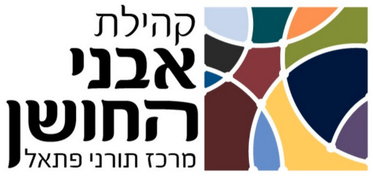

<!doctype html>
<html lang="he" dir="rtl">
<head>
<meta charset="utf-8">
<meta name="viewport" content="width=device-width,initial-scale=1,viewport-fit=cover">
<meta name="theme-color" content="#10294f">
<meta http-equiv="Content-Security-Policy" content="default-src 'self' blob:; script-src 'self' 'unsafe-inline'; style-src 'self' 'unsafe-inline'; img-src 'self' data:; font-src 'self'; connect-src 'self'; manifest-src 'self'; object-src 'none'; base-uri 'self'; form-action 'none'">
<link rel="manifest" href="manifest.webmanifest">
<link rel="icon" href="icon-192.png">
<link rel="apple-touch-icon" href="icon-192.png">
<title>תנ״ך יומי</title>
<style>
@font-face{font-family:"TanachFont";src:url(font.woff2?v=2) format("woff2");font-weight:100 900;font-stretch:62% 100%;font-display:swap}
@font-face{font-family:"UIFont";src:url(font-ui.woff2) format("woff2");font-weight:100 900;font-display:swap}
:root{--bg:#f4efe4;--card:#fffdf8;--ink:#23262d;--mute:#6d6a62;--accent:#14305a;--ok:#22875a;--line:#e6dec9;--mark:#fff1b8;--fs:26px;
 --hld:#fde2a0;--hlz:#c6ecd6;--bmc:#9b2c3d;--bmbg:rgba(155,44,61,.10);--bmflash:rgba(155,44,61,.32);--c1:#b4572b;--c2:#1b7f8c;--c3:#6a3fa0;--gold:#d9a441;--hero1:#0f2750;--hero2:#1b5e86;--hero3:#1b8a94}
[data-theme=dark]{--bmc:#e57a8e;--bmbg:rgba(229,122,142,.14);--bmflash:rgba(229,122,142,.38);--bg:#12161c;--card:#1b2029;--ink:#e9e5da;--mute:#9b978c;--accent:#9cc0f0;--ok:#5fc287;--line:#2b323d;--mark:#4a4220;--hld:#5a4a1a;--hlz:#1f5a3d;--c1:#e08a5c;--c2:#52b8c4;--c3:#b394e6}
[data-theme=sepia]{--bmc:#8a2c1d;--bmbg:rgba(138,44,29,.12);--bmflash:rgba(138,44,29,.34);--bg:#efe2c3;--card:#f8edd3;--ink:#3b2f1a;--mute:#7a6a4a;--accent:#6b3f1d;--ok:#3d7a43;--line:#d8c79d;--mark:#f3d982;--hld:#f4cf7a;--hlz:#bfe0c0}
*{box-sizing:border-box;-webkit-tap-highlight-color:transparent}
html,body{margin:0;background:var(--bg);color:var(--ink);font-family:"UIFont",system-ui,"Segoe UI",Arial,sans-serif;font-size:17px}
button,select,input{font:inherit;color:inherit}button{cursor:pointer}
svg{width:1.15em;height:1.15em;vertical-align:-.2em;fill:none;stroke:currentColor;stroke-width:2;stroke-linecap:round;stroke-linejoin:round}
#app{max-width:720px;margin:0 auto;padding:0 14px calc(104px + env(safe-area-inset-bottom))}
/* hero */
.hero{margin:0 -14px;padding:calc(14px + env(safe-area-inset-top)) 18px 48px;text-align:center;color:#fff;border-radius:0 0 34px 34px;
 background:radial-gradient(circle at 15% 10%,rgba(217,164,65,.35),transparent 45%),radial-gradient(circle at 90% 90%,rgba(255,255,255,.12),transparent 40%),linear-gradient(160deg,var(--hero1),var(--hero2) 60%,var(--hero3))}
.logo{display:inline-block;background:#fff;border-radius:18px;padding:8px 14px;box-shadow:0 8px 24px rgba(0,0,0,.25)}
.logo img{display:block;height:72px;width:auto}
.hero h1{margin:8px 0 0;font-size:31px;font-weight:800;letter-spacing:.5px}
.hero h1 b{color:var(--gold)}
.hero p{margin:0;opacity:.9;font-size:14px}
.htop{display:flex;align-items:center;justify-content:space-between;gap:12px}
.hded{display:flex;flex-direction:column;align-items:center;gap:5px;padding:9px 14px;border:1px solid rgba(217,164,65,.55);border-radius:14px;background:rgba(255,255,255,.08);text-align:center}
.hded div{line-height:1.25}
.hded i{width:26px;height:1px;background:var(--gold);opacity:.8}
.hded small{display:block;color:var(--gold);font-size:12px;font-weight:700;letter-spacing:.6px}
.hded b{display:block;font-size:15px;font-weight:700;color:#fff}
.orn{display:flex;align-items:center;gap:10px;justify-content:center;color:var(--gold);margin:6px auto 0;max-width:260px}
.orn:before,.orn:after{content:"";flex:1;height:1px;background:linear-gradient(90deg,transparent,var(--gold))}
.orn:after{transform:scaleX(-1)}
.card{background:var(--card);border:1px solid var(--line);border-radius:20px;padding:14px;margin:10px 0;box-shadow:0 2px 10px rgba(20,48,90,.06)}
.datecard{margin-top:-34px;text-align:center;position:relative;padding:12px 12px 12px}
.datecard .he{font-size:26px;font-weight:800;color:var(--accent);line-height:1.2}
.datecard .gr{font-size:15px;color:var(--mute);margin-top:2px}
.chip{display:inline-block;margin-top:6px;background:linear-gradient(90deg,var(--c2),var(--c3));color:#fff;border-radius:999px;padding:4px 14px;font-size:14px;font-weight:600}
.strip{display:flex;gap:5px;margin-top:8px}
.dy{flex:1;min-width:0;border:1px solid var(--line);background:var(--bg);border-radius:14px;padding:4px 0 5px;font-size:12px;color:var(--mute);line-height:1.15;font-weight:600}
.dy b{display:block;font-size:15px;color:var(--ink);margin-top:2px;font-weight:800}
.dy.sel{background:var(--accent);border-color:var(--accent);color:#cfe0f5}.dy.sel b{color:#fff}
.dy.today{box-shadow:inset 0 -4px 0 var(--gold)}
.dy:disabled{opacity:.35;cursor:default}
.weeknav{display:flex;align-items:center;justify-content:space-between;gap:6px;margin-top:6px}
.weeknav button{border:0;background:none;color:var(--accent);font-weight:800;font-size:15px;padding:8px 4px}
.weeknav .td{border:2px solid var(--accent);border-radius:999px;padding:4px 20px;background:none;color:var(--accent)}
.weeknav .td.on{background:var(--accent);color:var(--card);box-shadow:0 3px 10px rgba(20,48,90,.3)}
.swrow{display:flex;align-items:center;justify-content:center;gap:6px;margin-top:8px;font-size:13px;color:var(--mute);font-weight:600}
.sg{border:1px solid var(--line);background:var(--bg);border-radius:999px;padding:6px 12px;font-weight:700;font-size:13px;color:var(--ink)}
.sg.on{background:var(--accent);border-color:var(--accent);color:var(--card)}
.nav{display:flex;gap:8px;margin-top:14px;justify-content:center;flex-wrap:wrap}
.nav button{border:1px solid var(--line);background:var(--bg);border-radius:999px;padding:9px 18px;font-weight:600}
.nav button.p{background:var(--accent);color:var(--card);border-color:var(--accent)}
/* chapter cards */
.chap{display:flex;align-items:center;gap:10px;padding:10px 20px 10px 12px;position:relative;overflow:hidden}
.chap:before{content:"";position:absolute;inset-block:0;inset-inline-start:0;width:9px;background:linear-gradient(180deg,var(--hero1),var(--hero2) 60%,var(--hero3))}
.chap .t{flex:1}
.chap .t small{color:var(--cc);font-weight:700;font-size:14px}
.chap .t b{font-size:23px;display:block;line-height:1.15}
.chap .t span{font-size:14px;color:var(--mute)}
.chap .btns{display:flex;flex-direction:column;gap:6px}
.btn{border:0;border-radius:12px;padding:7px 14px;font-weight:700;white-space:nowrap}
.btn.read{background:linear-gradient(135deg,var(--hero1),var(--hero2) 65%,var(--hero3));color:#fff;font-size:17px;font-weight:800;padding:6px 16px 6px 10px;display:flex;align-items:center;gap:9px;box-shadow:0 5px 14px rgba(16,41,80,.35)}
.btn.read .ic{width:30px;height:30px;border-radius:50%;background:rgba(255,255,255,.2);display:grid;place-items:center;flex:none}
.btn.read .ic svg{width:20px;height:20px;stroke-width:2.2}
.btn.read:active{transform:scale(.97)}
.btn.chk{background:var(--bg);border:2px solid var(--line);color:var(--mute)}
.btn.chk.on{background:var(--ok);border-color:var(--ok);color:#fff}
.chap.done .t b{color:var(--ok)}
.banner{background:var(--mark);border-radius:16px;padding:12px 14px;display:flex;align-items:center;gap:10px;margin:14px 0}
.banner.col{flex-direction:column;align-items:stretch}
.banner .bb{display:flex;gap:8px;flex-wrap:wrap}
.banner .bb button{margin:0;flex:1;min-width:130px}
.banner button{margin-inline-start:auto;border:0;background:var(--accent);color:var(--card);border-radius:10px;padding:9px 14px;font-weight:700;white-space:nowrap}
.ring{--p:0;width:74px;height:74px;border-radius:50%;background:conic-gradient(var(--ok) calc(var(--p)*1%),var(--line) 0);display:grid;place-items:center;flex:none}
.ring i{width:56px;height:56px;border-radius:50%;background:var(--card);display:grid;place-items:center;font-style:normal;font-weight:800;font-size:16px}
.prog{display:flex;align-items:center;gap:14px}
.bar{height:10px;background:var(--line);border-radius:6px;overflow:hidden}
.bar i{display:block;height:100%;background:var(--ok)}
h3.sh{margin:0 0 10px;font-size:19px;color:var(--accent);display:flex;align-items:center;gap:8px}
.lbl{font-size:13px;font-weight:700;color:var(--mute);margin:10px 2px 4px}
.sels{display:grid;grid-template-columns:1.1fr 1.3fr 1fr;gap:8px}
select{width:100%;height:46px;border:1px solid var(--line);background:var(--card);border-radius:10px;padding:0 10px;font-size:17px;color:var(--ink)}
.sels2{display:grid;grid-template-columns:1fr 1fr;gap:8px}
.tabs{position:fixed;bottom:0;inset-inline:0;background:var(--card);border-top:1px solid var(--line);display:flex;gap:8px;padding:8px 10px calc(8px + env(safe-area-inset-bottom));z-index:6;box-shadow:0 -4px 16px rgba(0,0,0,.06)}
.tabs button{flex:1;border:0;border-radius:14px;background:none;padding:8px 4px;font-size:14px;color:var(--mute);display:flex;flex-direction:column;align-items:center;gap:2px}
.tabs svg{width:24px;height:24px}
.tabs button.on{color:var(--accent);font-weight:800}
.tabs button.hl{background:linear-gradient(135deg,#1b5e86,#1b8a94);color:#fff;font-weight:800;box-shadow:0 5px 14px rgba(27,94,134,.5);position:relative}
.tabs button.hl i{position:absolute;top:-9px;left:10px;background:var(--gold);color:#14305a;border-radius:999px;font-style:normal;font-size:12px;font-weight:800;padding:1px 8px}
.sec{font-size:15px;font-weight:800;margin:20px 4px 4px;display:flex;align-items:center;gap:8px}
.sec:before{content:"";width:6px;height:18px;border-radius:3px;background:var(--cc)}
.book{display:block;width:100%;text-align:right;background:var(--card);border:1px solid var(--line);border-radius:14px;padding:10px 12px;margin:6px 0}
.book .r{display:flex;justify-content:space-between;margin-bottom:6px}
.grid{display:grid;grid-template-columns:repeat(auto-fill,minmax(52px,1fr));gap:8px}
.grid button{height:48px;border-radius:10px;border:1px solid var(--line);background:var(--card);font-size:17px}
.grid button.on{background:var(--ok);border-color:var(--ok);color:#fff}
.grid button.bm{outline:3px solid var(--gold)}
/* footer */
.ft{text-align:center;margin:30px 0 8px;color:var(--mute)}
.ft .ded{margin:10px auto;padding:12px 10px;max-width:380px;border-top:1px solid var(--line);border-bottom:1px solid var(--line)}
.ft .ded small{display:block;color:var(--gold);letter-spacing:1px;font-size:13px;font-weight:700}
.ft .ded b{display:block;color:var(--accent);font-size:17px;font-weight:700;margin:1px 0 6px}
.ft .ded b:last-child{margin-bottom:0}
.ft .cp{font-size:12px;opacity:.85}
.ft .src{font-size:11px;opacity:.75;margin-top:6px;line-height:1.5}
.ft .src a{color:inherit;text-decoration:underline}
/* reader */
.rh{position:sticky;top:0;z-index:5;margin:0 -14px;padding:calc(8px + env(safe-area-inset-top)) 12px 10px;display:flex;align-items:center;gap:10px;color:#fff;background:linear-gradient(160deg,var(--hero1),var(--hero2) 70%,var(--hero3));box-shadow:0 4px 14px rgba(0,0,0,.2)}
.rh .home{display:flex;align-items:center;gap:6px;border:0;background:#fff;color:#10294f;font-weight:800;border-radius:999px;padding:9px 14px;box-shadow:0 2px 6px rgba(0,0,0,.25);white-space:nowrap}
.rh .rt{flex:1;text-align:center;font-weight:800;font-size:19px}
.rh .gear{border:1px solid rgba(255,255,255,.5);background:rgba(255,255,255,.14);color:#fff;border-radius:12px;height:42px;min-width:46px;font-weight:800;display:flex;align-items:center;justify-content:center;gap:4px;padding:0 10px}
.cmn{font-size:14px;color:var(--mute);text-align:center;margin:6px 0;font-family:"UIFont",system-ui,sans-serif}
.legend{display:flex;gap:10px;justify-content:center;flex-wrap:wrap;font-size:13px;color:var(--mute);margin:12px 0 4px;font-family:"UIFont",sans-serif}
.legend span{display:inline-flex;align-items:center;gap:6px}
.legend i{width:16px;height:16px;border-radius:5px;display:inline-block}
.text{font-family:"TanachFont","Noto Serif Hebrew","Ezra SIL","SBL Hebrew","Times New Roman",serif;font-size:var(--fs);line-height:2.2;text-align:right;hyphens:none;margin-top:8px}
.v{border-radius:8px;transition:background .3s}
.v.bm{background:var(--bmbg)}
.v.pulse{animation:bmpulse .9s ease-in-out 3}
@keyframes bmpulse{0%,100%{background:var(--bmbg)}50%{background:var(--bmflash)}}
.vn.on{background:var(--bmc);border-color:var(--bmc);color:#fff}
.vn svg{width:1.1em;height:1.1em;vertical-align:-.18em;margin-inline-start:5px}
.vn.on svg{fill:currentColor}
.bmline{display:flex;align-items:center;gap:10px;margin:8px 0 14px;color:var(--bmc);font-family:"UIFont",system-ui,sans-serif;font-size:16px;font-weight:800;line-height:1.2}
.bmline:before,.bmline:after{content:"";flex:1;height:2px;background:var(--bmc);opacity:.85}
.bmline button{border:1px solid var(--bmc);background:transparent;color:var(--bmc);border-radius:999px;font-size:12px;font-weight:700;padding:3px 10px}
.hint{display:flex;align-items:center;gap:12px;background:var(--card);border:2px dashed var(--bmc);border-radius:16px;padding:12px 14px;margin:10px 0 4px;font-family:"UIFont",system-ui,sans-serif;font-size:15px;line-height:1.5}
.hint b{color:var(--bmc)}
.hint button{border:0;background:var(--bmc);color:#fff;border-radius:10px;padding:9px 14px;font-weight:700;white-space:nowrap}
.bmcard{display:flex;align-items:center;gap:14px;background:linear-gradient(135deg,var(--card),var(--bmbg));border:2px solid var(--bmc);padding:14px}
.bmcard .ico{width:46px;height:46px;border-radius:50%;background:var(--bmc);color:#fff;display:grid;place-items:center;flex:none}
.bmcard .ico svg{width:24px;height:24px;fill:currentColor}
.bmcard .tx{flex:1;min-width:0}
.bmcard .tx small{color:var(--bmc);font-weight:800;font-size:13px}
.bmcard .tx b{display:block;font-size:20px}
.bmcard .tx span{display:block;font-family:"TanachFont",serif;font-size:17px;color:var(--mute);white-space:nowrap;overflow:hidden;text-overflow:ellipsis;direction:rtl}
.rls{display:flex;gap:8px;flex-wrap:wrap;align-items:center;margin:10px 0 2px;font-size:14px;color:var(--mute);font-weight:700}
.chap .rls{margin:8px 0 0}
.rl{max-width:100%;text-decoration:none;border-radius:999px;padding:9px 14px;font-weight:800;font-size:14px;line-height:1.2;display:inline-block}
.rl.sp{background:#1db954;color:#07210f}.rl.ez{background:var(--accent);color:var(--card)}
.nv{flex:none;width:44px;min-height:44px;border:1px solid var(--line);background:var(--bg);color:var(--accent);border-radius:14px;display:grid;place-items:center;padding:0}
.nv:disabled{opacity:.28;cursor:default}
.nv svg{width:22px;height:22px;stroke-width:2.6;margin:0}
.tabs .nv{align-self:center}
.rh{flex-wrap:wrap}
.rh .nv{border:1px solid rgba(255,255,255,.5);background:rgba(255,255,255,.14);color:#fff;width:42px;min-height:42px}
.rh .spacer{flex:1}
.rh .rt2{flex-basis:100%;text-align:center;font-weight:800;font-size:19px;margin-top:2px}
.bookrow{display:flex;gap:6px;align-items:stretch;margin:6px 0}
.bookrow .book{margin:0;flex:1}
.bk-all{flex:none;width:54px;border:1px solid var(--line);background:var(--card);border-radius:12px;font-weight:800;font-size:20px;color:var(--ok)}
.bk-all.full{background:var(--ok);color:#fff;border-color:var(--ok)}
.bkhead{font-weight:800;font-size:17px;margin-bottom:10px}
.bkbtns{display:flex;gap:8px;flex-wrap:wrap;margin-bottom:12px}
.bkbtns button{border:1px solid var(--line);background:var(--bg);border-radius:12px;padding:10px 12px;font-weight:700;font-size:14px}
.bkbtns button.ok{background:var(--ok);border-color:var(--ok);color:#fff}
.bkbtns button.on{background:var(--accent);color:var(--card);border-color:var(--accent)}
.grid button.sel{outline:3px solid var(--accent);background:var(--mark)}
.selbar{position:fixed;left:10px;right:10px;bottom:calc(84px + env(safe-area-inset-bottom));z-index:7;background:var(--card);border:2px solid var(--accent);border-radius:16px;padding:10px;display:flex;flex-wrap:wrap;gap:8px;align-items:center;box-shadow:0 8px 24px rgba(0,0,0,.3)}
.selbar b{flex-basis:100%;font-size:15px}
.selbar button{border:1px solid var(--line);background:var(--bg);border-radius:12px;padding:9px 12px;font-weight:700;font-size:14px}
.selbar button.ok{background:var(--ok);border-color:var(--ok);color:#fff}
.ver{font-size:12px;color:var(--mute);margin-top:12px;font-weight:700}
.refbtn{display:block;margin:8px auto 0;border:2px solid var(--accent);background:var(--card);color:var(--accent);border-radius:12px;padding:10px 18px;font-weight:800;font-size:15px}
.vernote{font-size:12px;color:var(--mute);margin-top:6px;line-height:1.4}
.sharecard{border:2px solid var(--line);padding:13px;margin:10px 0}
.sharecard .shh{display:flex;align-items:center;gap:8px;font-weight:800;font-size:18px;color:var(--ink);margin:0 0 4px}
.sharecard .shh svg{width:20px;height:20px;fill:none;stroke:currentColor;stroke-width:2.2;stroke-linecap:round;stroke-linejoin:round}
.sharecard .shs{font-size:13px;color:var(--mute);margin:0 0 10px}
.sharecard .sgrid{display:grid;grid-template-columns:1fr 1fr;gap:10px}
.sharecard .sb{display:flex;align-items:center;justify-content:center;gap:9px;border:0;border-radius:999px;padding:10px 10px;color:#fff;font-weight:800;font-size:16px;transition:transform .12s}
.sharecard .sb:active{transform:scale(.96)}
.sharecard .sb svg{width:22px;height:22px;fill:currentColor;flex:none}
.sharecard .sb.cp svg{fill:none;stroke:#fff;stroke-width:2.2;stroke-linecap:round;stroke-linejoin:round}
.sharecard .wa{background:#2f9e44}.sharecard .fb{background:#1877d2}.sharecard .tg{background:#12a0a8}.sharecard .cp{background:#5b2fa3}
.sharecard .more{margin-top:8px;width:100%;display:flex;align-items:center;justify-content:center;gap:9px;background:transparent;color:var(--accent);border:2px solid var(--accent);border-radius:999px;padding:9px;font-weight:800;font-size:16px}
.sharecard .more svg{width:22px;height:22px;fill:none;stroke:currentColor;stroke-width:2;stroke-linecap:round;stroke-linejoin:round}
.sharecard .help{display:block;margin:8px auto 0;border:0;background:none;color:var(--mute);text-decoration:underline;font-size:13px;padding:0}
.help-steps{font-size:16px;line-height:1.7}.help-steps li{margin-bottom:8px}.help-steps b{color:var(--accent)}
.bmcard{flex-wrap:wrap}
.bmcard .go{border:0;background:var(--bmc);color:#fff;border-radius:12px;padding:13px 14px;font-weight:800;font-size:17px;width:100%}
.vn{font-family:"UIFont",system-ui,sans-serif;font-size:.5em;line-height:1.1;color:var(--accent);border:1px solid var(--line);border-radius:8px;padding:6px 10px;margin-inline-end:6px;cursor:pointer;vertical-align:middle;background:var(--card);white-space:nowrap;min-width:34px}
.vn:focus-visible,.hl:focus-visible,.lo:focus-visible{outline:3px solid var(--accent);outline-offset:2px}
.pb{display:block;height:.6em}
.hl{border-radius:10px;padding:1px 4px;cursor:pointer;-webkit-box-decoration-break:clone;box-decoration-break:clone}
.hl.d{background:var(--hld)}.hl.z{background:var(--hlz)}.hl.dz{background:linear-gradient(180deg,var(--hld) 50%,var(--hlz) 50%)}
.lo{border:0;line-height:1.6;display:inline-block;font-family:"UIFont",sans-serif;font-size:.45em;border-radius:999px;padding:0 9px;margin-inline-end:4px;vertical-align:middle;cursor:pointer;color:var(--ink)}
.lo.d{background:var(--hld)}.lo.z{background:var(--hlz)}
.rbar{position:fixed;bottom:0;inset-inline:0;background:var(--card);border-top:1px solid var(--line);padding:8px 10px calc(8px + env(safe-area-inset-bottom));display:flex;gap:8px;align-items:stretch;z-index:6;box-shadow:0 -4px 16px rgba(0,0,0,.08)}
.rbar button{border:1px solid var(--line);background:var(--bg);border-radius:14px;min-height:50px;padding:4px 10px;font-weight:700;line-height:1.15;flex:1}
.rbar button small{display:block;font-weight:500;font-size:12px;color:var(--mute)}
.rbar .next{background:var(--accent);color:var(--card);border-color:var(--accent)}
.rbar .next small{color:inherit;opacity:.85}
.rbar .learn{flex:1.2;background:var(--card);color:var(--ok);border:2px solid var(--ok)}
.rbar .learn.on{background:var(--ok);color:#fff}
/* sheets */
.ov{position:fixed;inset:0;background:rgba(10,18,34,.55);z-index:30;display:none;align-items:flex-end;justify-content:center}
.ov.show{display:flex}
.sheet{overscroll-behavior:contain;background:var(--card);width:100%;max-width:720px;max-height:78vh;overflow:auto;border-radius:22px 22px 0 0;padding:18px 18px calc(22px + env(safe-area-inset-bottom));animation:up .22s ease-out}
@keyframes up{from{transform:translateY(40px);opacity:0}}
.sheet .x{float:left;border:0;background:var(--bg);width:38px;height:38px;border-radius:50%;font-size:18px}
.cmt{border-radius:14px;padding:12px 14px;margin:10px 0;line-height:1.85;font-size:19px}
.cmt.d{background:var(--hld)}.cmt.z{background:var(--hlz)}
.cmt .src{font-size:13px;font-weight:800;opacity:.75;display:block}
.cmt h4{margin:2px 0 4px;font-size:22px;font-family:"TanachFont",serif}
.row{display:flex;align-items:center;justify-content:space-between;gap:10px;padding:12px 0;border-bottom:1px solid var(--line)}
.row:last-of-type{border:0}
.seg{display:flex;gap:6px}
.seg button{border:1px solid var(--line);background:var(--bg);border-radius:10px;padding:8px 12px;font-weight:700}
.seg button.on{background:var(--accent);color:var(--card);border-color:var(--accent)}
.themes{display:grid;grid-template-columns:repeat(4,1fr);gap:6px;width:100%}
.themes button{border:2px solid var(--line);border-radius:14px;padding:10px 4px;font-size:15px;font-weight:700;display:flex;flex-direction:column;align-items:center;gap:4px;background:var(--bg)}
.themes button.on{border-color:var(--accent)}
.themes i{width:34px;height:22px;border-radius:6px;border:1px solid rgba(0,0,0,.2)}
.sw{width:52px;height:30px;border-radius:999px;border:0;background:var(--line);position:relative;flex:none}
.sw:after{content:"";position:absolute;top:3px;inset-inline-start:3px;width:24px;height:24px;border-radius:50%;background:#fff;transition:.2s;box-shadow:0 1px 3px rgba(0,0,0,.3)}
.sw.on{background:var(--ok)}.sw.on:after{inset-inline-start:25px}
.toast{position:fixed;top:80px;left:50%;transform:translateX(-50%);background:#222;color:#fff;padding:10px 18px;border-radius:999px;z-index:40;font-size:15px;opacity:0;transition:opacity .25s;pointer-events:none}
.toast.show{opacity:.95}
.toast button{margin-inline-start:14px;border:0;background:#fff;color:#14305a;border-radius:999px;padding:6px 14px;font-weight:800}
</style>
</head>
<body>
<div id="app"></div>
<div class="ov" id="ov"><div class="sheet" id="sheet" role="dialog" aria-modal="true" tabindex="-1"></div></div>
<div class="toast" id="toast"></div>
<script src="meta.js"></script>
<script>
"use strict";
/* ---------- נתונים ---------- */
const B = window.META;   // שמות ומספר פסוקים בכל פרק; הטקסט נטען לפי ספר מ-text/
if (!Array.isArray(B)) {
  document.getElementById("app").innerHTML = '<div style="text-align:center;padding:60px 20px;font-size:18px"><b>לא ניתן לטעון את נתוני התנ״ך</b><div style="margin:8px 0 16px;opacity:.75">בדוק את החיבור לאינטרנט, או אם חוסם פרסומות מופעל, ורענן את הדף.</div><button onclick="location.reload()" style="padding:10px 22px;border-radius:12px;border:0;background:#14305a;color:#fff;font-size:17px">רענן</button></div>';
  throw new Error("META data is missing");
}
const START = Date.UTC(2026, 9, 3);          // כ״ב בתשרי תשפ״ז = יום 1
const PER_DAY = 2;
const GROUPS = [["נביאים ראשונים", 0, 6, "--c1"], ["נביאים אחרונים", 6, 21, "--c2"], ["כתובים", 21, B.length, "--c3"]];
const groupOf = b => GROUPS.findIndex(g => b >= g[1] && b < g[2]);
const CH = [];
B.forEach((b, bi) => b.c.forEach((_, ci) => CH.push({ b: bi, c: ci })));
const TOTAL = CH.length, DAYS = Math.ceil(TOTAL / PER_DAY);
const firstG = []; { let g = 0; B.forEach((b, i) => { firstG[i] = g; g += b.c.length; }); }

/* ---------- מצב ---------- */
const KEY = "tanachYomi.v1";
const ck = g => B[CH[g].b].n + ":" + (CH[g].c + 1);          // מפתח יציב: "שמואל א:12"
const KG = Object.create(null); CH.forEach((_, g) => KG[ck(g)] = g);
const vcount = g => B[CH[g].b].c[CH[g].c];
let S = { v: 2, done: {}, bm: null, hintBm: false, from: 0, fs: 26, taamim: true, theme: "light", cd: true, cz: true, sunset: true };
try {
  const raw = JSON.parse(localStorage.getItem(KEY) || "{}");
  if (!raw || typeof raw !== "object" || Array.isArray(raw)) throw 0;
  if (raw.done && (typeof raw.done !== "object" || Array.isArray(raw.done))) delete raw.done;
  if (raw.v !== 2 && raw.done) {                               // המרה ממפתחות רצים למפתחות ספר:פרק
    const nd = {}; for (const k in raw.done) if (/^\d+$/.test(k) && CH[+k]) nd[ck(+k)] = 1;
    raw.done = nd; if (raw.bm && raw.bm.g != null) raw.bm = CH[raw.bm.g] ? { k: ck(raw.bm.g), v: raw.bm.v } : null;
  }
  Object.assign(S, raw, { v: 2 });
} catch (e) {}
{ // אימות מצב שנטען מהאחסון - ערכים פגומים לא ישברו את האפליקציה
  const okBm = b => b && typeof b.k === "string" && b.k in KG && Number.isInteger(b.v) && b.v >= 0 && b.v < vcount(KG[b.k]);
  S.done = Object.fromEntries(Object.keys(S.done && typeof S.done === "object" ? S.done : {}).filter(k => k in KG).map(k => [k, 1]));
  if (!okBm(S.bm)) S.bm = null;
  if (!(Number.isFinite(S.fs) && S.fs >= 16 && S.fs <= 48)) S.fs = 26;
  if (!["light", "sepia", "dark", "auto"].includes(S.theme)) S.theme = "light";
  if (!Number.isInteger(S.from) || S.from < 0) S.from = 0;
  S.sunset = S.sunset !== false; S.taamim = S.taamim !== false; S.cd = S.cd !== false; S.cz = S.cz !== false;
}
const save = () => { try { localStorage.setItem(KEY, JSON.stringify(S)); } catch (e) {} };
const isDone = g => !!S.done[ck(g)];
const bmG = () => S.bm ? KG[S.bm.k] : undefined;
const markV = g => bmAt(g) ? S.bm.v : (route.resume && KG[route.resume.k] === g ? route.resume.v : null);
const BMI = '<svg viewBox="0 0 24 24"><path d="M6 3h12v18l-6-4-6 4z"/></svg>';
const bmAt = (g, v) => S.bm && KG[S.bm.k] === g && (v === undefined || S.bm.v === v);
try { navigator.storage && navigator.storage.persist && navigator.storage.persist(); } catch (e) {}
const darkMQ = window.matchMedia ? matchMedia("(prefers-color-scheme: dark)") : null;
function applyTheme() { document.documentElement.dataset.theme = S.theme === "auto" ? (darkMQ && darkMQ.matches ? "dark" : "light") : S.theme; }
applyTheme();
if (darkMQ) (darkMQ.addEventListener ? darkMQ.addEventListener("change", applyTheme) : darkMQ.addListener(applyTheme));

/* ---------- עזרים ---------- */
function heb(n) {
  const L = [[400, "ת"], [300, "ש"], [200, "ר"], [100, "ק"], [90, "צ"], [80, "פ"], [70, "ע"], [60, "ס"], [50, "נ"], [40, "מ"], [30, "ל"], [20, "כ"], [10, "י"], [9, "ט"], [8, "ח"], [7, "ז"], [6, "ו"], [5, "ה"], [4, "ד"], [3, "ג"], [2, "ב"], [1, "א"]];
  let s = ""; for (const [v, l] of L) { if (n === 15 || n === 16) { s += n === 15 ? "טו" : "טז"; n = 0; break; } while (n >= v) { s += l; n -= v; } }
  return s;
}
const gem = n => { const h = heb(n); return h.length > 1 ? h.slice(0, -1) + "״" + h.slice(-1) : h + "׳"; };
const chName = g => `${B[CH[g].b].n} ${gem(CH[g].c + 1)}`;
const hebParts = new Intl.DateTimeFormat("he-u-ca-hebrew", { day: "numeric", month: "long", year: "numeric" });
const hebOf = d => { const p = {}; hebParts.formatToParts(d).forEach(x => p[x.type] = x.value); const num = v => /^\d+$/.test(v); return { y: p.year, m: p.month, d: p.day, yt: num(p.year) ? gem(+p.year % 1000) : p.year, dt: num(p.day) ? gem(+p.day) : p.day }; };
const hebFmt = { format(d) { const h = hebOf(d); return `${h.dt} ב${h.m} ${h.yt}`; } };
const wdFmt = new Intl.DateTimeFormat("he-IL", { weekday: "long" });
const GMONTH = ["ינואר", "פברואר", "מרץ", "אפריל", "מאי", "יוני", "יולי", "אוגוסט", "ספטמבר", "אוקטובר", "נובמבר", "דצמבר"];
const pad = n => String(n).padStart(2, "0");
const iso = d => `${d.getFullYear()}-${pad(d.getMonth() + 1)}-${pad(d.getDate())}`;
const parseISO = s => { const [y, m, d] = s.split("-").map(Number); return new Date(y, m - 1, d, 12); };
const dayIdx = d => Math.round((Date.UTC(d.getFullYear(), d.getMonth(), d.getDate()) - START) / 864e5);
const dateOfIdx = i => { const d = new Date(START); return new Date(d.getUTCFullYear(), d.getUTCMonth(), d.getUTCDate() + i, 12); };
/* היום העברי מתחיל בשקיעה: אחרי השקיעה בירושלים "היום" הוא התאריך הבא. מחושב לפי שעון ירושלים, בלי תלות באזור הזמן של המכשיר. */
const JER = new Intl.DateTimeFormat("en-CA", { timeZone: "Asia/Jerusalem", year: "numeric", month: "2-digit", day: "2-digit" });
function sunsetMs(y, m, d, lat = 31.778, lon = 35.235) {          // m מ-0; אלגוריתם NOAA, מחזיר זמן UTC במילישניות
  const R = Math.PI / 180, JD = Date.UTC(y, m, d, 12) / 864e5 + 2440587.5, T = (JD - 2451545) / 36525;
  const L0 = (280.46646 + T * (36000.76983 + T * 0.0003032)) % 360, M = 357.52911 + T * (35999.05029 - 0.0001537 * T), e = 0.016708634 - T * (0.000042037 + 0.0000001267 * T);
  const C = Math.sin(M * R) * (1.914602 - T * (0.004817 + 0.000014 * T)) + Math.sin(2 * M * R) * (0.019993 - 0.000101 * T) + Math.sin(3 * M * R) * 0.000289;
  const om = 125.04 - 1934.136 * T, lam = L0 + C - 0.00569 - 0.00478 * Math.sin(om * R);
  const e0 = 23 + (26 + (21.448 - T * (46.815 + T * (0.00059 - T * 0.001813))) / 60) / 60, eps = e0 + 0.00256 * Math.cos(om * R);
  const dec = Math.asin(Math.sin(eps * R) * Math.sin(lam * R)), y2 = Math.tan(eps * R / 2) ** 2;
  const eq = 4 * (y2 * Math.sin(2 * L0 * R) - 2 * e * Math.sin(M * R) + 4 * e * y2 * Math.sin(M * R) * Math.cos(2 * L0 * R) - 0.5 * y2 * y2 * Math.sin(4 * L0 * R) - 1.25 * e * e * Math.sin(2 * M * R)) / R;
  const ha = Math.acos(Math.cos(90.833 * R) / (Math.cos(lat * R) * Math.cos(dec)) - Math.tan(lat * R) * Math.tan(dec)) / R;
  return Date.UTC(y, m, d) + (720 - 4 * (lon - ha) - eq) * 60000;
}
let todayShifted = false;
const today = () => {
  const [y, m, d] = JER.format(new Date()).split("-").map(Number);
  todayShifted = S.sunset !== false && Date.now() >= sunsetMs(y, m - 1, d);
  return new Date(y, m - 1, d + (todayShifted ? 1 : 0), 12);
};
const $ = s => document.querySelector(s);
const doneCount = () => Object.keys(S.done).filter(k => k in KG).length;
function toast(t, act) {
  const e = $("#toast"); e.textContent = t; e.style.pointerEvents = act ? "auto" : "none";
  if (act) { const b = document.createElement("button"); b.textContent = act; b.setAttribute("data-undo", ""); e.appendChild(b); }
  e.classList.add("show"); clearTimeout(toast.t); toast.t = setTimeout(() => { e.classList.remove("show"); e.style.pointerEvents = "none"; }, act ? 7000 : 1800);
}
const I = {
  home: '<svg viewBox="0 0 24 24"><path d="M3 11l9-8 9 8"/><path d="M5 10v10h5v-6h4v6h5V10"/></svg>',
  book: '<svg viewBox="0 0 24 24"><path d="M4 5a2 2 0 012-2h13v16H6a2 2 0 00-2 2z"/><path d="M4 19V5"/></svg>',
  chart: '<svg viewBox="0 0 24 24"><path d="M4 20V10M10 20V4M16 20v-8M22 20H2"/></svg>',
  cal: '<svg viewBox="0 0 24 24"><rect x="3" y="5" width="18" height="16" rx="3"/><path d="M8 3v4M16 3v4M3 10h18"/></svg>',
  openbook: '<svg viewBox="0 0 24 24"><path d="M12 6.5C9.8 5 7 4.5 3.5 4.5v13c3.5 0 6.3.5 8.5 2 2.2-1.5 5-2 8.5-2v-13C17 4.5 14.2 5 12 6.5z"/><path d="M12 6.5v13"/></svg>',
  check: '<svg viewBox="0 0 24 24"><path d="M5 12l5 5 9-10"/></svg>'
};

/* ---------- ניתוב ---------- */
let route = { v: "day", date: iso(today()) };
let navBook = "", lastDay = null, lastHash = null, booted = false, navIdx = 0, navMax = 0;
try { if (/[?&]r=\d+/.test(location.search)) history.replaceState(history.state, "", location.pathname + location.hash); } catch (e) {}
if (history.state && Number.isInteger(history.state.i)) navIdx = navMax = history.state.i; else try { history.replaceState({ i: 0 }, ""); } catch (e) {}
const urlOf = r => "#" + r.v + (r.date ? "/" + r.date : "") + (r.g != null ? "/" + r.g : "") + (r.b != null ? "/" + r.b : "");
function go(r, replace) {
  route = r;
  if (replace) history.replaceState({ i: navIdx }, "", urlOf(r)); else { navIdx++; navMax = navIdx; history.pushState({ i: navIdx }, "", urlOf(r)); }
  lastHash = location.hash; closeSheet(); render();
}
function fromHash() {
  if (location.hash === lastHash) return; const first = !booted; booted = true; lastHash = location.hash;
  const [v, a] = location.hash.slice(1).split("/");
  if (v === "read" && CH[+a]) route = { v, g: +a };
  else if (v === "book" && B[+a]) route = { v, b: +a };
  else if (v === "progress") route = { v };
  else route = { v: "day", date: !first && /^\d{4}-\d\d-\d\d$/.test(a || "") ? a : iso(today()) };
  closeSheet(); render();
}
window.addEventListener("popstate", e => { navIdx = e.state && Number.isInteger(e.state.i) ? e.state.i : 0; lastHash = null; fromHash(); });
window.addEventListener("hashchange", fromHash);
const navArrows = () => `<button class="nv" data-navback aria-label="חזרה אחורה" ${navIdx > 0 ? "" : "disabled"}><svg viewBox="0 0 24 24"><path d="M9 5l7 7-7 7"/></svg></button><button class="nv" data-navfwd aria-label="קדימה" ${navIdx < navMax ? "" : "disabled"}><svg viewBox="0 0 24 24"><path d="M15 5l-7 7 7 7"/></svg></button>`;
const navBack = () => `<button class="nv" data-navback aria-label="חזרה אחורה" ${navIdx > 0 ? "" : "disabled"}><svg viewBox="0 0 24 24"><path d="M9 5l7 7-7 7"/></svg></button>`;
const navFwd = () => `<button class="nv" data-navfwd aria-label="קדימה" ${navIdx < navMax ? "" : "disabled"}><svg viewBox="0 0 24 24"><path d="M15 5l-7 7 7 7"/></svg></button>`;

/* ---------- רשימת ימי הלימוד (לבחירת תאריך) ---------- */
const DL = []; for (let i = 0; i < DAYS; i++) { const d = dateOfIdx(i), h = hebOf(d); DL.push({ i, iso: iso(d), gy: d.getFullYear(), gm: d.getMonth(), gd: d.getDate(), hy: h.y, hyt: h.yt, hm: h.m, hdn: h.d, hdt: h.dt }); }
const uniq = (arr, k, lab) => { const m = new Map(); arr.forEach(x => { if (!m.has(x[k])) m.set(x[k], lab(x)); }); return [...m]; };

/* ---------- פירושים ---------- */
const commCache = {}, commFail = {}; let commToasted = false;
function loadComm(b) {
  if (commCache[b] !== undefined || commFail[b]) return;
  commCache[b] = null;
  fetch("comm/" + b + ".json").then(r => { if (!r.ok) throw 0; return r.json(); }).then(j => { commCache[b] = j; })
    .catch(() => { delete commCache[b]; commFail[b] = true; if (!commToasted) { commToasted = true; toast("הפירושים לא נטענו - נדרש חיבור לאינטרנט"); } })
    .finally(() => { if (route.v === "read" && CH[route.g].b === b && commCache[b]) { route.keep = true; render(); } });
}
const TX = {}, txLoading = {}, txFail = {};
window.addEventListener("online", () => { for (const k in commFail) delete commFail[k]; commToasted = false; for (const k in txFail) delete txFail[k]; if (route.v === "read") { route.keep = true; render(); } });
function loadText(b) {
  if (TX[b] || txLoading[b]) return; txLoading[b] = 1; delete txFail[b];
  fetch("text/" + b + ".json").then(r => { if (!r.ok) throw 0; return r.json(); }).then(j => { TX[b] = j; })
    .catch(() => { txFail[b] = 1; })
    .finally(() => { delete txLoading[b]; if (route.v === "read" && CH[route.g].b === b) render(); else if (route.v === "day" && bmG() != null && CH[bmG()].b === b) { route.keep = true; render(); } });
}
const NIK = /[֑-ׇ͏]/g;
const norm = s => s.replace(NIK, "").replace(/[^א-ת]/g, "");
const strip1 = s => s.replace(/^[ובהכלמש]{1,2}/, "");
const zsk = s => strip1(s).replace(/[וי]/g, "");           // שלד עיצורי, ללא אותיות קריאה
function sim(a, b) {                                         // התאמה מחמירה: אותה מילה, עד כדי תחילית וכתיב מלא/חסר
  if (!a || !b) return false; if (a === b) return true;
  if ((a === "ה" && /^[ובהכלמש]?יהוה$/.test(b)) || (b === "ה" && /^[ובהכלמש]?יהוה$/.test(a))) return true;
  const x = strip1(a), y = strip1(b); if (x.length >= 2 && x === y) return true;
  const p = zsk(a), q = zsk(b); return p.length >= 2 && p === q;
}
function parseC(s, src) {
  const m = /^\s*<(?:b|strong)[^>]*>([\s\S]*?)<\/(?:b|strong)>\s*([\s\S]*)$/i.exec(s);
  const h = m ? m[1].replace(/<[^>]+>/g, "").replace(/[.:\s]+$/, "") : "", b = (m ? m[2] : s).replace(/<[^>]+>/g, "");
  const hw = h.replace(/(וגו|וכו|וגומר|וכולי)[׳'’"]?.*$/, "").split(/[\s־-]+/).map(norm).filter(Boolean);
  return { src, h, b, hw };
}
function annotate(words, cs) {
  const map = {}, loose = [], cur = { d: 0, z: 0 }, n = words.length;
  for (const c of cs) {
    let best = -1, run = 0;
    if (c.hw.length && n) {
      const idx = [...Array(n).keys()], from = cur[c.src] % n, starts = idx.slice(from).concat(idx.slice(0, from));
      for (const i of starts) {
        if (!sim(words[i].n, c.hw[0])) continue;
        let r = 1; while (r < c.hw.length && i + r < n && sim(words[i + r].n, c.hw[r])) r++;
        if (r > run) { run = r; best = i; if (r === c.hw.length) break; }
      }
    }
    if (best < 0) { loose.push(c); continue; }
    for (let k = best; k < best + run; k++) (map[k] = map[k] || []).push(c);
    cur[c.src] = best + run;
  }
  return { map, loose };
}
let POP = [];

/* ---------- תצוגות ---------- */
/* קישורי העמקה לפי ספר. הקישורים לספר מופיעים רק מהיום שבו הלימוד מגיע אליו בלוח. */
const SPOTIFY = { 0: "https://open.spotify.com/show/3vwz2wQgsFF5fdZGLnPFyd" };   // הרב מוטי פרנקו - להוסיף ספר נוסף: מספר הספר: קישור לסדרה
const ETZ = "https://etzion.org.il/he/series/tanakh-yomi-";
const ETZION = { 0: "yehoshua", 1: "shoftim", 2: "shmuel-alef-bet", 3: "shmuel-alef-bet", 4: "melakhim-alef-bet", 5: "melakhim-alef-bet", 6: "yeshayahu", 7: "yirmeyahu", 8: "yechezkel",
  9: "trei-asar", 10: "trei-asar", 11: "trei-asar", 12: "trei-asar", 13: "trei-asar", 14: "trei-asar", 15: "trei-asar", 16: "trei-asar", 17: "trei-asar", 18: "trei-asar", 19: "trei-asar", 20: "trei-asar",
  21: "tehillim", 22: "mishlei", 23: "iyov", 24: "shir-hashirim", 25: "megillat-rut", 26: "eikha", 27: "kohelet", 28: "ester", 29: "daniel", 30: "ezra", 31: "nechemia" };
for (let b = 9; b <= 20; b++) ETZION[b] = "trei-asar";
/* שיעורי הר עציון ליהושע: לכל פרק (או זוג פרקים) - שם הקישור הקצר וכותרת השיעור */
const ETZ_YEHOSHUA = "https://etzion.org.il/he/tanakh/neviim/sefer-yehoshua/";
const YL = {};
[[[1], "1-bein-moshe-leyehoshua", "בין משה עבד ה׳ ליהושע משרת משה"], [[2], "2-ha-im-hameraglim-hitzlichu", "האם המרגלים הצליחו?"], [[3, 4], "3-4-chatzayat-hayarden", "חציית הירדן"],
 [[5], "5-matai-nikhtav-sefer-yehoshua", "מתי נכתב ספר יהושע?"], [[6], "6-mivtza-tzevai-o-tekes-dati", "מבצע צבאי או טקס דתי?"], [[7, 8], "7-8-chet-achan-umilchemet-ha-ay", "חטא עכן ומלחמת העי"],
 [[9], "9-kocha-shel-shevua", "כוחה של שבועה"], [[10], "10-milchama-michutz-lachoma", "מלחמה מחוץ לחומה"], [[11], "11-milchemet-malkhei-hatzafon", "מלחמת (מלכי) הצפון"],
 [[12], "12-chatimat-pirkei-hakibbush", "חתימת פרקי הכיבוש"], [[13], "13-haaretz-nishara-harbeh-meod-lerishta", "הארץ נשארה הרבה מאוד לרשתה"], [[14], "14-mapat-hahitnachlut", "מפת ההתנחלות"],
 [[15, 16], "perakim-15-16", "נחלות יהודה ויוסף"], [[17], "17-menashe-bekhor-yosef", "מנשה בכור יוסף"], [[18], "18-hashevatim-hamitrapim", "השבטים המתרפים"],
 [[19], "19-hemshekh-teurei-hanachalot", "המשך תיאורי הנחלות"], [[20], "20-arei-miklat", "ערי מקלט"], [[21], "21-arei-haleviim", "ערי הלויים"],
 [[22], "22-kimat-milchemet-achim", "כמעט מלחמת אחים"], [[23, 24], "23-24-neumei-yehoshua-ukritat-habrit", "נאומי יהושע לעם לפני מותו וכריתת הברית"]]
  .forEach(([chs, slug, title]) => chs.forEach(c => YL[c] = { url: ETZ_YEHOSHUA + slug, title }));
/* קישורי ישיר לפרקים ב-Spotify (מספר ספר:מספר פרק -> מזהה הפרק). פרק בלי מזהה לא מציג כפתור שמע. */
/* שיעורי הר עציון לשופטים ולשמואל, לפי "מספר ספר:מספר פרק" -> [כתובת יחסית, כותרת]. שופטים=1, שמואל א=2, שמואל ב=3, מלכים א=4, מלכים ב=5, ישעיהו=6, ירמיהו=7, יחזקאל=8, תרי עשר=9..20 */
const ETZ_NEV = "https://etzion.org.il/he/tanakh/neviim/";
const ETZ_L = {"1:1":["sefer-shoftim/1-reshimat-choser-hahorasha","רשימת חוסר ההורשה"],"1:2":["sefer-shoftim/2-piskat-hamavo-lasefer","פסקת המבוא לספר"],"1:3":["sefer-shoftim/3-hagoyim-sheHashem-hotir","הגויים היושבים בארץ: חטא, עונש וניסיון"],"1:4":["sefer-shoftim/4-barak-udevora-yael-vesisra","ברק ודבורה, יעל וסיסרא"],"1:5":["sefer-shoftim/5-behitnadev-am-barkhu-Hashem","בהתנדב עם ברכו ה'"],"1:6":["sefer-shoftim/6-ayei-kol-nifleotav","איה כל נפלאותיו"],"1:7":["sefer-shoftim/7-8-sippur-gidon","סיפור גדעון"],"1:8":["sefer-shoftim/7-8-sippur-gidon","סיפור גדעון"],"1:9":["sefer-shoftim/9-mashal-haatad","משל האטד"],"1:10":["sefer-shoftim/10-vatiktzar-nafsho","ותקצר נפשו בעמל ישראל"],"1:11":["sefer-shoftim/11-yiftach-uneumo","יפתח ונאומו"],"1:12":["sefer-shoftim/12-yiftach-keshofet","יפתח כשופט"],"1:13":["sefer-shoftim/13-meshanim-mipnei-hashalom","משנים מפני השלום"],"1:14":["sefer-shoftim/14-shimshon-hagibbor","שמשון הגיבור"],"1:15":["sefer-shoftim/15-16-hemshekh-sippurei-shimshon","המשך סיפורי שמשון"],"1:16":["sefer-shoftim/15-16-hemshekh-sippurei-shimshon","המשך סיפורי שמשון"],"1:17":["sefer-shoftim/17-sippurei-ein-melekh-beyisrael","סיפורי 'אין מלך בישראל'"],"1:18":["sefer-shoftim/18-matai-karu-hasippurim","מתי קרו הסיפורים?"],"1:19":["sefer-shoftim/19-pilegesh-bagiva-vehatext-kemaarekhet-shel-paarim","פילגש בגבעה ורב מערכתיות במילוי פערים"],"1:20":["sefer-shoftim/20-milchemet-bnei-yisrael-beshevet-binyamin","מלחמת בני ישראל בשבט בנימין"],"1:21":["sefer-shoftim/21-hashevua","השבועה"],"2:1":["sefer-shmuel-aleph/1-shevirat-tzipiyot","שבירת ציפיות"],"2:2":["sefer-shmuel-aleph/2-shmuel-el-mul-bnei-eli","שמואל מול בני עלי"],"2:3":["sefer-shmuel-aleph/3-eli-ushmuel-umidrashei-chazal","עלי ושמואל ומדרשי חז\"ל"],"2:4":["sefer-shmuel-aleph/4-hatefisa-hamagit","התפיסה המאגית"],"2:5":["sefer-shmuel-aleph/5-yetziat-haaron-meiplishtim","יציאת הארון מפלשתים"],"2:6":["sefer-shmuel-aleph/6-chazarat-ha-aron","חזרת הארון לבית שמש, והשלכותיה"],"2:7":["sefer-shmuel-aleph/7-shmuel-nitzachon-al-plishtim","שמואל מוביל את העם לניצחון על פלישתים"],"2:8":["sefer-shmuel-aleph/8-bakashat-hamelekh","בקשת המלך"],"2:9":["sefer-shmuel-aleph/9-demuto-shel-shaul","דמותו של שאול"],"2:10":["sefer-shmuel-aleph/10-hamlakhat-shaul","המלכת שאול"],"2:11":["sefer-shmuel-aleph/11-demuto-shel-shaul","דמותו של שאול"],"2:12":["sefer-shmuel-aleph/12-natan-Hashem-aleikhem-melekh","נתן ה' עליכם מלך"],"2:13":["sefer-shmuel-aleph/13-uflishtim-neesafim-michmash","ופלשתים נאספים מכמש"],"2:14":["sefer-shmuel-aleph/14-milchamot-shaul-beflishtim","מלחמות שאול בפלישתים"],"2:15":["sefer-shmuel-aleph/15-sippur-amalek","סיפור עמלק"],"2:16":["sefer-shmuel-aleph/16-melekh-asher-yivchar-Hashem-e-lohekha-bo","מלך אשר יבחר ה' א־להיך בו"],"2:17":["sefer-shmuel-aleph/17-adino-haetzni","סיפור דוד וגוליית והסיפורים הכפולים בספר שמואל"],"2:18":["sefer-shmuel-aleph/18-shaul-vs-david","שאול מול דוד: כדור שלג של חרדות"],"2:19":["sefer-shmuel-aleph/19-hagam-shaul-baneviim","הגם שאול בנביאים?"],"2:20":["sefer-shmuel-aleph/20-machar-chodesh","מחר חודש"],"2:21":["sefer-shmuel-aleph/21-david-benov","דוד בנב"],"2:22":["sefer-shmuel-aleph/22-mi-yigleh-et-ozni","מי יגלה את אזני?"],"2:23":["sefer-shmuel-aleph/23-tzemichato-shel-david-kemanhig%20beshem-Hashem","צמיחתו של דוד כמנהיג בשם ה'"],"2:24":["sefer-shmuel-aleph/24-vayakom-david-vayikhrot","ויקם דוד ויכרות"],"2:25":["sefer-shmuel-aleph/25-menakha-mibo-bedamim","מנעך מבוא בדמים"],"2:26":["sefer-shmuel-aleph/26-david-bemachaneh-shaul-paam-nosefet","דוד במחנה שאול: פעם נוספת"],"2:27":["sefer-shmuel-aleph/27-david-bemachaneh-pelishtim","דוד במחנה פלישתים"],"2:28":["sefer-shmuel-aleph/28-vayishal-shaul","וישאל שאול"],"2:29":["sefer-shmuel-aleph/29-mah-haivrim-haeileh","מה העברים האלה?"],"2:30":["sefer-shmuel-aleph/30-milchemet-david-baamalek","מלחמת דוד בעמלק"],"2:31":["sefer-shmuel-aleph/31-mot-shaul","מות שאול"],"3:1":["sefer-shmuel-bet/1-hanaar-haamaleki","הנער העמלקי"],"3:2":["sefer-shmuel-bet/2-melekh-al-beit-yehuda","מלך על בית יהודה"],"3:3":["sefer-shmuel-bet/3-4-vedavid-holekh-vechazeik","ודוד הלך וחזק; ובית שאול?"],"3:4":["sefer-shmuel-bet/3-4-vedavid-holekh-vechazeik","ודוד הלך וחזק; ובית שאול?"],"3:5":["sefer-shmuel-bet/5-keir-she-chubra-ka-yachdav","כעיר שחוברה לה יחדיו"],"3:6":["sefer-shmuel-bet/6-haalaat-haaron-leYerushalayim","העלאת הארון לירושלים"],"3:7":["sefer-shmuel-bet/%D7%A9%D7%9E%D7%95%D7%90%D7%9C-%D7%91-%D7%A4%D7%A8%D7%A7-%D7%96-%D7%91%D7%99%D7%AA-%D7%9E%D7%A7%D7%93%D7%A9-%D7%95%D7%91%D7%99%D7%AA-%D7%9E%D7%9C%D7%95%D7%9B%D7%94-%D7%9E%D7%90%D7%A8%D7%A2%D7%99%D7%95%D7%AA-%D7%9C%D7%A7%D7%91%D7%A2","בית מקדש ובית מלוכה: מארעיות לקבע"],"3:8":["sefer-shmuel-bet/%D7%A9%D7%9E%D7%95%D7%90%D7%9C-%D7%91-%D7%A4%D7%A8%D7%A7-%D7%97-%D7%9E%D7%9C%D7%97%D7%9E%D7%95%D7%AA-%D7%93%D7%95%D7%93","מלחמות דוד"],"3:9":["sefer-shmuel-bet/9-mefiboshet","מפיבושת"],"3:10":["sefer-shmuel-bet/10-veHashem-yaaseh-hatov-beeinav","וה' יעשה הטוב בעיניו"],"3:11":["sefer-shmuel-bet/11-12-chet-david-ubatsheva","חטא דוד ובת שבע"],"3:12":["sefer-shmuel-bet/11-12-chet-david-ubatsheva","חטא דוד ובת שבע"],"3:13":["sefer-shmuel-bet/13-amnon-vetamar","אמנון ותמר"],"3:14":["sefer-shmuel-bet/14-haisha-hachakhama-mitekoa","האישה החכמה מתקוע"],"3:15":["sefer-shmuel-bet/15-16-mered-avshalom","מרד אבשלום"],"3:16":["sefer-shmuel-bet/15-16-mered-avshalom","מרד אבשלום"],"3:17":["sefer-shmuel-bet/17-atzat-chushai","עצת חושי"],"3:18":["sefer-shmuel-bet/18-kerav-mered-avshalom","קרב מרד אבשלום"],"3:19":["sefer-shmuel-bet/19-20-chazarat-david-lemalchuto","דוד חוזר למלכותו?"],"3:20":["sefer-shmuel-bet/19-20-chazarat-david-lemalchuto","דוד חוזר למלכותו?"],"3:21":["sefer-shmuel-bet/21-nikmat-hagivonim","נקמת הגבעונים"],"3:22":["sefer-shmuel-bet/22-shirat-david","שירת דוד"],"3:23":["sefer-shmuel-bet/23-hashlamat-shirat-david-ureshimat-hagiborim","השלמת שירת דוד ורשימת הגיבורים"],"3:24":["sefer-shmuel-bet/24-hamageifa-ubechirat-goren-aravna","המגפה ובחירת גורן ארוונה"],"4:1":["sefer-melakhim-aleph/1-hamlakhat-shlomo","המלכת שלמה"],"4:2":["sefer-melakhim-aleph/2-tzavaat-david","צוואת דוד"],"4:3":["sefer-melakhim-aleph/3-mishpat-shlomo","משפט שלמה ועניינים נוספים"],"4:4":["sefer-melakhim-aleph/4-sarei-shlomo-venitzavav","שרי שלמה וניצביו"],"4:5":["sefer-melakhim-aleph/5-ish-tachat-gafno","איש תחת גפנו ותחת תאנתו"],"4:6":["sefer-melakhim-aleph/6-tafkid-hamikdash","תפקיד המקדש"],"4:7":["sefer-melakhim-aleph/7-beit-hamelekh","בית המלך, וכלי הנחושת לבית ה'"],"4:8":["sefer-melakhim-aleph/8-chanukat-hamikdash-utefillat-shlomo","חנוכת המקדש ותפילת שלמה"],"4:9":["sefer-melakhim-aleph/9-10-hidarderut-malchut-shlomo","הדרדרות מלכות שלמה"],"4:10":["sefer-melakhim-aleph/9-10-hidarderut-malchut-shlomo","הדרדרות מלכות שלמה"],"4:11":["sefer-melakhim-aleph/nefilat-mamlekhet-shlomo","נפילת ממלכת שלמה ופיצול הממלכה"],"4:12":["sefer-melakhim-aleph/nefilat-mamlekhet-shlomo","נפילת ממלכת שלמה ופיצול הממלכה"],"4:13":["sefer-melakhim-aleph/13-dvar-Hashem","דבר ה'"],"4:14":["sefer-melakhim-aleph/14-gala-sodo-el-avadav-haneviim","גלה סודו אל עבדיו הנביאים"],"4:15":["sefer-melakhim-aleph/15-avim-veasa","אבים ואסא והפער בין מלכים לדברי הימים"],"4:16":["sefer-melakhim-aleph/16-hidarderut-malkhut-yisrael","הידרדרות מלכות ישראל"],"4:17":["sefer-melakhim-aleph/17-e-lohei-avi","א־להי אבי, לי יביא, את אליהו הנביא"],"4:18":["sefer-melakhim-aleph/18-ad-matai-atem-poschim","עד מתי אתם פוסחים על שתי הסעפים"],"4:19":["sefer-melakhim-aleph/19-eliyahu-bechorev","אליהו בחורב"],"4:20":["sefer-melakhim-aleph/20-milchamot-achav-uven-hadad","מלחמות אחאב ובן-הדד"],"4:21":["sefer-melakhim-aleph/21-kerem-navot","כרם נבות ואמצעי החזרה בסיפור המקראי"],"4:22":["sefer-melakhim-aleph/22-hayachas-bein-yisrael-veyehuda","היחס בין ישראל ויהודה"],"5:1":["sefer-melakhim-bet/1-achazya-baal-zvuv-ushlichat-hashlichim-leEliyahu","אחזיה, בעל זבוב ושליחת השליחים לאליהו"],"5:2":["sefer-melakhim-bet/2-Eliyahu-oleh-beseara-hashamayma","אליהו עולה בסערה השמימה"],"5:3":["sefer-melakhim-bet/3-matzevet-meisha","מצבת מישע"],"5:4":["sefer-melakhim-bet/4-haisha-hashunamit","האישה השונמית"],"5:5":["sefer-melakhim-bet/5-tzaraat-naaman","צרעת נעמן"],"5:6":["sefer-melakhim-bet/6-milchemet-aram-beyisrael","מלחמת ארם בישראל, והנהגת אלישע"],"5:7":["sefer-melakhim-bet/7-yom-besora","יום בשורה"],"5:8":["sefer-melakhim-bet/8-hagedolot-asher-asa-elisha","הגדולות אשר עשה אלישע"],"5:9":["sefer-melakhim-bet/9-10-aliyat-yehu","עליית יהוא"],"5:10":["sefer-melakhim-bet/9-10-aliyat-yehu","עליית יהוא"],"5:11":["sefer-melakhim-bet/11-malchut-yisrael-umalchut-yehuda","מלכות ישראל ומלכות יהודה"],"5:12":["sefer-melakhim-bet/12-giyus-kesafim","גיוס כספים"],"5:13":["sefer-melakhim-bet/13-14-bein-aram-yisrael-veyehuda","סגירת סיפורי אלישע ורחמי ה' על ישראל"],"5:14":["sefer-melakhim-bet/%D7%9E%D7%9C%D7%9B%D7%99%D7%9D-%D7%91-%D7%A4%D7%A8%D7%A7-%D7%99%D7%93-%D7%94%D7%99%D7%A9%D7%92%D7%99-%D7%99%D7%A9%D7%A8%D7%90%D7%9C-%D7%95%D7%99%D7%94%D7%95%D7%93%D7%94-%D7%95%D7%94%D7%99%D7%97%D7%A1-%D7%91%D7%99%D7%A0%D7%99%D7%94%D7%9F","הישגי ישראל ויהודה והיחס ביניהן"],"5:15":["sefer-melakhim-bet/15-hitporerut-mamlekhet-yisrael","התפוררות ממלכת ישראל"],"5:16":["sefer-melakhim-bet/16-malkhut-achaz","מלכות אחז"],"5:17":["sefer-melakhim-bet/17-galut-aseret-hashevatim","גלות עשרת השבטים"],"5:18":["sefer-melakhim-bet/18-malkhut-chizkiyahu","מלכות חזקיהו"],"5:19":["sefer-melakhim-bet/19-hatzalat-yerushalayim","הצלת ירושלים"],"5:20":["sefer-melakhim-bet/20-machalat-chizkiya","מחלת חזקיה"],"5:21":["sefer-melakhim-bet/melakhim-ii-chapter-21-reign-menashe","מלכות מנשה"],"5:22":["sefer-melakhim-bet/%D7%9E%D7%9C%D7%9B%D7%99%D7%9D-%D7%91-%D7%A4%D7%A8%D7%A7-%D7%9B%D7%91-%D7%99%D7%90%D7%A9%D7%99%D7%94%D7%95-%D7%91%D7%99%D7%9F-%D7%99%D7%99%D7%90%D7%95%D7%A9-%D7%9C%D7%AA%D7%99%D7%A7%D7%95%D7%9F","יאשיהו: בין ייאוש לתיקון"],"5:23":["sefer-melakhim-bet/23-24-hamahapeikha-shel-yoshiyahu","המהפכה של יאשיהו ומלכי יהודה האחרונים"],"5:24":["sefer-melakhim-bet/23-24-hamahapeikha-shel-yoshiyahu","המהפכה של יאשיהו ומלכי יהודה האחרונים"],"5:25":["sefer-melakhim-bet/25-hachurban","החורבן"],"6:1":["sefer-yeshayahu/1-lama-li-rov-zivkheikhem","למה לי רוב זבחיכם"],"6:2":["sefer-yeshayahu/2-yom-Hashem-vechet-hagaava","יום ה' וחטא הגאווה"],"6:3":["sefer-yeshayahu/3-hitmotetut-hamaamadot-bachevra","התמוטטות המעמדות בחברה"],"6:4":["sefer-yeshayahu/4-hanishar-betzion-vehanotar-beyerushalayim","הנשאר בציון והנותר בירושלים"],"6:5":["sefer-yeshayahu/5-mashal-hakerem-unevuot-hoy","משל הכרם ונבואות 'הוי'"],"6:6":["sefer-yeshayahu/6-kadosh-kadosh-kadosh","קדוש קדוש קדוש"],"6:7":["sefer-yeshayahu/7-hishamer-vehashket","השמר והשקט"],"6:8":["sefer-yeshayahu/8-maher-shalal-chash-baz","מהר שלל חש בז והשימוש בשמות הילדים"],"6:9":["sefer-yeshayahu/9-yeshuat-yehuda-umapalat-yisrael","ישועת יהודה ומפלת ישראל"],"6:10":["sefer-yeshayahu/10-hayitpaer-garzen-al-hachotzev-bo","היתפאר גרזן על החוצב בו?!"],"6:11":["sefer-yeshayahu/11-vayetze-choter-migeza-yishai","ויצא חוטר מגזע ישי"],"6:12":["sefer-yeshayahu/12-shirat-hayeshua","שירת הישועה"],"6:13":["sefer-yeshayahu/13-masa-bavel","משא בבל"],"6:14":["sefer-yeshayahu/14-hakina-al-melekh-bavel","הקינה על מלך בבל"],"6:15":["sefer-yeshayahu/15-masa-moav","משא מואב"],"6:16":["sefer-yeshayahu/16-hemshekh-masa-moav","המשך משא מואב"],"6:17":["sefer-yeshayahu/17-masa-damesek-ha-omnam","למי מיועד משא דמשק?"],"6:18":["sefer-yeshayahu/18-kinso-nes-harim-tiru","כנשא נס הרים תראו"],"6:19":["sefer-yeshayahu/19-masa-mitzrayim","משא מצרים"],"6:20":["sefer-yeshayahu/20-beshnat-bo-tarton-ashdoda","בשנת בא תרתן אשדודה"],"6:21":["sefer-yeshayahu/21-masa-midbar-yam-duma-ubarav","משאות מדבר ים, דומה ובערב: בלבול וחרדה"],"6:22":["sefer-yeshayahu/22-masa-gei-chizayon","משא גיא חזיון"],"6:23":["sefer-yeshayahu/23-masa-tzur","משא צור"],"6:24":["sefer-yeshayahu/24-apocalypsa","אפוקליפסה"],"6:25":["sefer-yeshayahu/25-mapelet-hakirya-habetzura-el-mul-hamaoz-ladal","שתי הערים: מפלת עיר המבצר ותקומת עיר המחסה לצדיקים"],"6:26":["sefer-yeshayahu/26-hashir-beeretz-yehuda","השיר בארץ יהודה"],"6:27":["sefer-yeshayahu/27-yitaka-beshofar-gadol","יתקע בשופר גדול"],"6:28":["sefer-yeshayahu/28-tzav-letzav-kav-lekav-veod","קשה להבין את דברי הנביא"],"6:29":["sefer-yeshayahu/29-reiya-ve-ivaron-kisuy-vehipakchut","בין עיוורון לראיה"],"6:30":["sefer-yeshayahu/30-haholkhim-laredet-mitzrayim-ufi-lo-shaalu","ההולכים לרדת מצרים ופי לא שאלו"],"6:31":["sefer-yeshayahu/31-veyivtechu-al-rekhev-ki-rav","ויבטחו על רכב כי רב"],"6:32":["sefer-yeshayahu/32-hen-latzedek-yimlokh-melekh","חברת הצדק באחרית הימים"],"6:33":["sefer-yeshayahu/32-hen-latzedek-yimlokh-melekh","חברת הצדק באחרית הימים"],"6:34":["sefer-yeshayahu/34-tevach-gadol-beeretz-edom","טבח גדול בארץ אדום"],"6:35":["sefer-yeshayahu/35-ufduyei-Hashem-yeshuvun","ופדויי ה' ישובון"],"6:36":["sefer-yeshayahu/36-37-masa-sancheriv","מסע סנחריב"],"6:37":["sefer-yeshayahu/36-37-masa-sancheriv","מסע סנחריב"],"6:38":["sefer-yeshayahu/38-bikesh-HKBH-laasot-chizkiyahu-mashiach","ביקש הקב\"ה לעשות חזקיהו משיח"],"6:39":["sefer-yeshayahu/39-mishlachat-merodakh-baladan","משלחת מרודך בלאדן"],"6:40":["sefer-yeshayahu/40-nachamu-nachamu-ami","נחמו נחמו עמי"],"6:41":["sefer-yeshayahu/41-vikuach-im-hagoyim","ויכוח עם הגויים"],"6:42":["sefer-yeshayahu/42-harishonot-hinei-bau-vechadashot-ani-maggid","הראשונות הנה באו וחדשות אני מגיד"],"6:43":["sefer-yeshayahu/43-ki-taavor-bemayim-itekha-ani","כי תעבור במים איתך אני"],"6:44":["sefer-yeshayahu/44-mi-yatzar-e-l-lebilti-hoil","הלעג לעובדי האלילים: מה משמעותו עבורנו?"],"6:45":["sefer-yeshayahu/45-koresh","כורש"],"6:46":["sefer-yeshayahu/46-ani-esbol-veamalet","אני אסבול ואמלט"],"6:47":["sefer-yeshayahu/47-redi-ushvi-al-afar-betulat-bat-bavel","רדי ושבי על עפר בתולת בת בבל"],"6:48":["sefer-yeshayahu/48-ki-am-kshei-oref-ata","כי עם קשה עורף אתה"],"6:49":["sefer-yeshayahu/49-divrei-hanavi-vedivrei-yerushalayim","התסכול של הנביא והייאוש של ציון"],"6:50":["sefer-yeshayahu/50-madua-bati-ve-ein-ish","מדוע באתי ואין איש"],"6:51":["sefer-yeshayahu/51-ufduyei-Hashem-yeshuvun-uvau-letzion-berina","ופדויי ה' ישובון ובאו ציון ברינה"],"6:52":["sefer-yeshayahu/52-mah-navu-divrei-yeshaya","משמיע שלום מבשר טוב"],"6:53":["sefer-yeshayahu/53-hinei-yaskil-avdi-vehapulmus-im-hanatzrut","הנה ישכיל עבדי והפולמוס עם הנצרות"],"6:54":["sefer-yeshayahu/54-ki-mei-noach-zot-li","כי מי נוח זאת לי"],"6:55":["sefer-yeshayahu/55-dirshu-Hashem-behimatzo","דרשו ה' בהמצאו"],"6:56":["sefer-yeshayahu/56-ben-haneichar-vehasaris","בן הנכר והסריס"],"6:57":["sefer-yeshayahu/57-tokhacha-charifa-al-avoda-zara","תוכחה חריפה על עבודה זרה"],"6:58":["sefer-yeshayahu/58-hakazeh-yiheyeh-tzom-evchareihu","הכזה יהיה צום אבחרהו"],"6:59":["sefer-yeshayahu/59-ein-koreh-betzedek","אין קרא בצדק"],"6:60":["sefer-yeshayahu/60-kumi-ori-ki-va-orekh","קוּמִי אוֹרִי כִּי בָא אוֹרֵךְ"],"6:61":["sefer-yeshayahu/61-peer-tachat-efer","פאר תחת אפר"],"6:62":["sefer-yeshayahu/62-lemaan-tzion-lo-echesheh","למען ציון לא אחשה"],"6:63":["sefer-yeshayahu/63-lama-tateinu-Hashem","למה תתענו ה'"],"6:64":["sefer-yeshayahu/64-65-zeakat-haam-uteshuvat-Hashem","זעקת העם ותשובת ה'"],"6:65":["sefer-yeshayahu/64-65-zeakat-haam-uteshuvat-Hashem","זעקת העם ותשובת ה'"],"6:66":["sefer-yeshayahu/66-hashamayim-kis-ie","השמים כסאי"],"7:1":["sefer-yirmeyahu/1-hakdashat-yirmiyahu","הקדשת ירמיהו"],"7:2":["sefer-yirmeyahu/2-zakharti-lakh-chesed-neurayekh-ve-at","זכרתי לך חסד נעורייך, ואת?"],"7:3":["sefer-yirmeyahu/3-hayashuv-eileha-od","הישוב אליה עוד?"],"7:4":["sefer-yirmeyahu/4-tikun-halev","תיקון הלב"],"7:5":["sefer-yirmeyahu/5-ha-al-eileh-lo-efkod","העל אלה לא אפקוד?"],"7:6":["sefer-yirmeyahu/6-hidarderut","הידרדרות"],"7:7":["sefer-yirmeyahu/7-heichal-Hashem-heichal-Hashem-heichal-Hashem-heima","היכל ה' היכל ה' היכל ה' המה"],"7:8":["sefer-yirmeyahu/8-lama-lo-chozrim-beteshuva","למה לא חוזרים בתשובה?"],"7:9":["sefer-yirmeyahu/9-yeush","יאוש"],"7:10":["sefer-yirmeyahu/10-bein-yisrael-la-amim","בין ישראל לעמים?"],"7:11":["sefer-yirmeyahu/11-habrit","הברית"],"7:12":["sefer-yirmeyahu/12-shalosh-nevuot","שלוש נבואות"],"7:13":["sefer-yirmeyahu/13-nevuat-ha-eizor","נבואת האזור"],"7:14":["sefer-yirmeyahu/14-habatzoret","הבצורת"],"7:15":["sefer-yirmeyahu/15-ki-mi-yachmol-alayekh-Yerushalayim","כי מי יחמול עליך, ירושלים?"],"7:16":["sefer-yirmeyahu/16-veheishavti-kol-sasson-vekol-simcha","והשבתי קול ששון וקול שמחה"],"7:17":["sefer-yirmeyahu/17-lo-tis-u-masa-beyom-haShabbat","לא תשאו משא ביום השבת"],"7:18":["sefer-yirmeyahu/18-19-shtei-nevuot-domot-akh-hafukhot","שתי נבואות דומות אך הפוכות"],"7:19":["sefer-yirmeyahu/18-19-shtei-nevuot-domot-akh-hafukhot","שתי נבואות דומות אך הפוכות"],"7:20":["sefer-yirmeyahu/20-chavayat-hanevua","חווית הנבואה"],"7:21":["sefer-yirmeyahu/21-derekh-hachayim-vederekh-hamavet","דרך החיים ודרך המוות"],"7:22":["sefer-yirmeyahu/22-nevuat-haroim","נבואת הרועים"],"7:23":["sefer-yirmeyahu/23-neviei-hasheker-umasa-Hashem","נביאי השקר ומשא ה'"],"7:24":["sefer-yirmeyahu/24-nevuat-hateenim","נבואת התאנים"],"7:25":["sefer-yirmeyahu/25-hashana-harishonit-lenevuchadretzar","השנה הראשונית לנבוכדראצר"],"7:26":["sefer-yirmeyahu/26-din-mavet-leYirmeyahu","דין מוות לירמיהו?"],"7:27":["sefer-yirmeyahu/27-hamoseirot-vehamotot","המוסרות והמוטות"],"7:28":["sefer-yirmeyahu/28-hamaavak-bechananya-ben-azur","המאבק בחנניה בן עזור"],"7:29":["sefer-yirmeyahu/29-eikh-mezahim-navi-sheker","איך מזהים נביא שקר"],"7:30":["sefer-yirmeyahu/31-nechama","נחמה"],"7:31":["sefer-yirmeyahu/31-nechama","נחמה"],"7:32":["sefer-yirmeyahu/32-geulat-sedei-chanamel","גאולת שדה חנמאל"],"7:33":["sefer-yirmeyahu/33-nitzchiyut-beit-david","נצחיות בית דוד"],"7:34":["sefer-yirmeyahu/34-shichrur-haavadim-vekhibusham-meichadash","שחרור העבדים וכיבושם מחדש"],"7:35":["sefer-yirmeyahu/35-hanevua-el-beit-hareikhavim","הנבואה אל בית הרכבים"],"7:36":["sefer-yirmeyahu/36-ketivat-sefer-hanevuot","כתיבת ספר הנבואות"],"7:37":["sefer-yirmeyahu/37-yirmeyahu-vetzidkeyahu","ירמיהו וצדקיהו"],"7:38":["sefer-yirmeyahu/38-39-rega-haemet","ירמיהו וצדקיהו: רגע האמת"],"7:39":["sefer-yirmeyahu/38-39-rega-haemet","ירמיהו וצדקיהו: רגע האמת"],"7:40":["sefer-yirmeyahu/40-hatikva","התקווה"],"7:41":["sefer-yirmeyahu/41-retzach-gedalia","רצח גדליה"],"7:42":["sefer-yirmeyahu/42-43-hasof-she-acharei-hasof","הסוף שאחרי הסוף"],"7:43":["sefer-yirmeyahu/42-43-hasof-she-acharei-hasof","הסוף שאחרי הסוף"],"7:44":["sefer-yirmeyahu/44-shoresh-haemuna-veshoresh-hameri","שורש האמונה ושורש המרי"],"7:45":["sefer-yirmeyahu/45-barukh-ben-neria","ברוך בן נריה"],"7:46":["sefer-yirmeyahu/46-hanevua-al-mitzrayim","הנבואה על מצרים"],"7:47":["sefer-yirmeyahu/47-nevua-el-pelishtim","נבואה אל פלישתים"],"7:48":["sefer-yirmeyahu/48-moav","מואב"],"7:49":["sefer-yirmeyahu/49-amon-edom-damesek-keidar-eilam","עמון, אדום, דמשק, קידר, עילם"],"7:50":["sefer-yirmeyahu/50-51-hanevua-al-bavel","הנבואה על בבל"],"7:51":["sefer-yirmeyahu/50-51-hanevua-al-bavel","הנבואה על בבל"],"7:52":["sefer-yirmeyahu/52-siyum-sefer-yirmeyahu","סיום ספר ירמיהו"],"8:1":["sefer-yechezkel/1-maaseh-merkava","מעשה מרכבה"],"8:2":["sefer-yechezkel/2-veyadu-ki-navi-haya-betokham","וידעו כי נביא היה בתוכם"],"8:3":["sefer-yechezkel/3-torat-hagemul","תורת הגמול והדגמת הנבואות"],"8:4":["sefer-yechezkel/4-nevuot-haleveina","נבואות הלבנה"],"8:5":["sefer-yechezkel/5-nevuat-haseiar","נבואת השיער"],"8:6":["sefer-yechezkel/6-veyadu-ki-ani-Hashem","וידעו כי אני ה'"],"8:7":["sefer-yechezkel/7-ba-haketz","בא הקץ"],"8:8":["sefer-yechezkel/8-od-tireh-toeivot-gedolot","עוד תשוב תראה תועבות גדולות"],"8:9":["sefer-yechezkel/9-hamashchit","המשחית"],"8:10":["sefer-yechezkel/10-11-haShekhina-veYerushalayim-uma-shebeineihen","השכינה וירושלים ומה שביניהן"],"8:11":["sefer-yechezkel/10-11-haShekhina-veYerushalayim-uma-shebeineihen","השכינה וירושלים ומה שביניהן"],"8:12":["sefer-yechezkel/12-einayim-lahem-lirot-velo-rau","עינים להם לראות ולא ראו"],"8:13":["sefer-yechezkel/13-neviei-uneviot-hasheker","נביאי ונביאות השקר"],"8:14":["sefer-yechezkel/14-noach-daniel-veiyov","ארץ כי תחטא"],"8:15":["sefer-yechezkel/15-mashal-etz-hagefen-shel-yechezkel","משל עץ הגפן של יחזקאל"],"8:16":["sefer-yechezkel/16-va-eevor-alayekh-va-erekh","ואעבור עלייך ואראך - משל האסופית"],"8:17":["sefer-yechezkel/17-hanesher-hagadol","הנשר הגדול"],"8:18":["sefer-yechezkel/18-torat-hagemul-besefer-yechezkel","תורת הגמול בספר יחזקאל"],"8:19":["sefer-yechezkel/19-kina-al-nesiei-yisrael","קינה על נשיאי ישראל"],"8:20":["sefer-yechezkel/20-becheima-shefukha-emlokh-aleikhem","בחמה שפוכה אמלוך עליכם"],"8:21":["sefer-yechezkel/21-memashel-meshalim","ממשל משלים"],"8:22":["sefer-yechezkel/22-vehodattah-et-kol-toavoteha","והודעתה את כל תועבותיה"],"8:23":["sefer-yechezkel/23-ahala-veahaliva","אהלה ואהליבה"],"8:24":["sefer-yechezkel/24-hayom-hazeh-samakh-melekh-bavel-el-yerushalayim","היום הזה סמך מלך בבל אל ירושלים"],"8:25":["sefer-yechezkel/25-nevuot-haamim","נבואות העמים"],"8:26":["sefer-yechezkel/26-27-hanevua-al-tzor","הנבואה על צור"],"8:27":["sefer-yechezkel/26-27-hanevua-al-tzor","הנבואה על צור"],"8:28":["sefer-yechezkel/28-nevua-al-melekh-tzor","נבואה על מלך צור"],"8:29":["sefer-yechezkel/29-hanevuot-al-mitzrayim","הנבואות על מצרים"],"8:30":["sefer-yechezkel/30-yom-Hashem-al-mitzrayim","יום ה' על מצרים"],"8:31":["sefer-yechezkel/31-mitzrayim-haetz-hagavoha-beatzei-hagan","מצרים העץ הגבוה בעצי הגן"],"8:32":["sefer-yechezkel/32-nevua-acharona-al-mitzrayim","נבואה אחרונה על מצרים"],"8:33":["sefer-yechezkel/33-besorat-hachurban","החורבן"],"8:34":["sefer-yechezkel/34-nevuat-haroim-vehatzon","נבואת הרועים והצאן"],"8:35":["sefer-yechezkel/35-puranut-kasha-al-edom","פורענות קשה על אדום"],"8:36":["sefer-yechezkel/36-veatem-harei-yisrael-anpekhem-titeinu","ואתם הרי ישראל ענפכם תתנו"],"8:37":["sefer-yechezkel/37-chazon-haatzamot-hayeveishot","חזון העצמות היבשות"],"8:38":["sefer-yechezkel/38-39-milchemet-og-umagog","מלחמת גוג ומגוג"],"8:39":["sefer-yechezkel/38-39-milchemet-og-umagog","מלחמת גוג ומגוג"],"8:40":["sefer-yechezkel/40-41-hamikdash-haatidi","המקדש העתידי"],"8:41":["sefer-yechezkel/40-41-hamikdash-haatidi","המקדש העתידי"],"8:42":["sefer-yechezkel/42-halishkot","הלשכות"],"8:43":["sefer-yechezkel/43-haShekhina-vehamelukha","השכינה והמלוכה"],"8:44":["sefer-yechezkel/44-benei-tzadok","בני צדוק"],"8:45":["sefer-yechezkel/45-hanasi","הנשיא"],"8:46":["sefer-yechezkel/46-hanasi-vehamikdash","הנשיא והמקדש"],"8:47":["sefer-yechezkel/47-hanachal-hayotzeh-min-hamikdash","הנחל היוצא מן המקדש"],"8:48":["sefer-yechezkel/48-chalukat-haaretz","חלוקת הארץ"],"9:1":["sefer-hoshea/1-kach-lekha-eishet-zenunim","קח לך אשת זנונים"],"9:2":["sefer-hoshea/2-ve-eirastikh-li-leolam","וארשתיך לי לעולם"],"9:3":["sefer-hoshea/3-uvikshu-et-Hashem","ובקשו את ה'"],"9:4":["sefer-hoshea/4-daat-Hashem","דעת ה'"],"9:5":["sefer-hoshea/5-vayelekh-ephraim-el-ashur","וילך אפרים אל אשור"],"9:6":["sefer-hoshea/6-chasdekhem-keanan-boker","חסדכם כענן בוקר"],"9:7":["sefer-hoshea/7-uga-beli-hafukha","עוגה בלי הפוכה"],"9:8":["sefer-hoshea/8-zanach-eglekh-shomron","זנח עגלך שומרון"],"9:9":["sefer-hoshea/9-galut","גלות"],"9:10":["sefer-hoshea/10-gefen-zeria-uketzira","גפן, זריעה וקצירה"],"9:11":["sefer-hoshea/11-ki-naar-yisrael-veohavehu","כי נער ישראל ואוהבהו"],"9:12":["sefer-hoshea/12-babeten-akav-et-achiv","בבטן עקב את אחיו"],"9:13":["sefer-hoshea/13-churban-mamlekhet-shomron","חורבן ממלכת שומרון"],"9:14":["sefer-hoshea/14-shuva-yisrael-ad-Hashem-e-lohekha","שובה ישראל עד ה' א־לוהיך"],"10:1":["sefer-yoel/1-haarbeh","הארבה"],"10:2":["sefer-yoel/2-vidatem-ki-bekerev-yisrael-ani","וידעתם כי בקרב ישראל אני"],"10:3":["sefer-yoel/3-eshpokh-et-ruchi-al-kol-basar","אשפוך את רוחי על כל בשר"],"10:4":["sefer-yoel/4-segira-lesefer-yoel","סגירה לספר יואל"],"11:1":["sefer-amos/1-al-shelosha-pishei-veal-arbaa-lo-ashivenu","על שלושה פשעי... ועל ארבעה לא אשיבנו"],"11:2":["sefer-amos/2-al-mikhram-bakesef-tzaddik","על מכרם בכסף צדיק ואביון בעבור נעלים"],"11:3":["sefer-amos/3-im-tiheyeh-raa-bair","אם תהיה רעה בעיר וה' לא עשה?"],"11:4":["sefer-amos/4-shimu-hadavar-hazeh-parot-habashan","שמעו הדבר הזה פרות הבשן"],"11:5":["sefer-amos/5-lama-lakhem-yom-Hashem","למה לכם יום ה'?"],"11:6":["sefer-amos/6-hashaananim-betzion-vehabotchim-behar-shomron","השאננים בציון והבוטחים בהר שומרון"],"11:7":["sefer-ovadia/7-mi-yakum-yaakov-ki-katon-hu","מי יקום יעקב כי קטן הוא"],"11:8":["sefer-amos/8-ba-haketz","בא הקץ"],"11:9":["sefer-amos/9-haraash-veyom-Hashem","הרעש ויום ה'"],"13:1":["sefer-yona/1-vayakom-yona-livroach-milifnei-Hashem","ויקם יונה לברוח מלפני ה'"],"13:2":["sefer-yona/2-hadag-utefillat-yona","הדג ותפילת יונה"],"13:3":["sefer-yona/3-teshuvat-ninveh","תשובת נינוה"],"13:4":["sefer-yona/4-erekh-apayim","ארך אפים ורב חסד וניחם על הרעה"],"14:1":["sefer-mikha/1-hinei-Hashem-yatza-mimkomo","הנה ה' יצא ממקומו"],"14:2":["sefer-mikha/2-al-tatifu-yatifun","אל תטיפו, יטיפון"],"14:3":["sefer-mikha/3-yerushalayim-iyin-tiheyeh","ירושלים עיין תהיה"],"14:4":["sefer-mikha/4-acharit-hayamim","אחרית הימים"],"14:5":["sefer-mikha/5-lismokh-al-Hashem","לסמוך על ה'"],"14:6":["sefer-mikha/6-ami-mah-asiti-lakh","עמי, מה עשיתי לך?"],"14:7":["sefer-mikha/7-mizmorei-siyum-lasefer","מזמורי סיום לספר"],"15:1":["sefer-nachum/1-masa-ninveh","משא נינווה"],"15:2":["sefer-nachum/2-ein-shnei-neviim-mitnabim-besignon-echad","אין שני נביאים מתנבאים בסגנון אחד"],"15:3":["sefer-nachum/3-ki-al-mi-lo-avra-raatkha-tamid","כי על מי לא עברה רעתך תמיד"],"16:1":["sefer-chabakuk/1-ad-ana-Hashem-shivati-velo-tishma","עד אנה ה' שועתי ולא תשמע"],"16:2":["sefer-chabakuk/2-teshuvat-Hashem","תשובת ה'"],"16:3":["sefer-chabakuk/3-tefilla-lechabakuk-hanavi-al-shigyonot","תפילה לחבקוק הנביא על שגיונות"],"17:1":["sefer-tzefania/1-2-reka-lemahapekhat-yeshayahu","רקע למהפכת יאשיהו"],"17:2":["sefer-tzefania/1-2-reka-lemahapekhat-yeshayahu","רקע למהפכת יאשיהו"],"17:3":["sefer-tzefania/3-vehisharti-bekirbekh-am-ani-vedal","והשארתי בקרבך עם עני ודל"],"18:1":["sefer-chagai/1-haoyev-shel-hatov-zeh-hamushlam","האויב של הטוב זה המושלם"],"18:2":["sefer-chagai/2-yom-yisud-heichal-Hashem","יום ייסוד היכל ה'"],"19:1":["sefer-zekharia/1-peticha-lemarot-zekharia","פתיחה למראות זכריה"],"19:2":["sefer-zekharia/2-perazot-teshev-yerushalayim","פרזות תשב ירושלים"],"19:3":["sefer-zekharia/3-yehoshua-hacohen-hagadol","יהושע הכהן הגדול"],"19:4":["sefer-zekharia/4-5-hemshekh-marot-zecharia","המשך מראות זכריה, והצעת מבנה למראות זכריה"],"19:5":["sefer-zekharia/4-5-hemshekh-marot-zecharia","המשך מראות זכריה, והצעת מבנה למראות זכריה"],"19:6":["sefer-zekharia/6-hinei-ish-tzemach-shemo","הנה איש צמח שמו"],"19:7":["sefer-zekharia/7-haevkeh-bachodesh-hachamishi","האבכה בחודש החמישי?"],"19:8":["sefer-zekharia/8-veani-eheyeh-lahem-le-e-lohim","וַאֲנִי אֶהְיֶה לָהֶם לֵא–לֹהִים בֶּאֱמֶת וּבִצְדָקָה"],"19:9":["sefer-zekharia/9-ani-verokhev-al-chamor","עני ורוכב על חמור"],"19:10":["sefer-zekharia/10-kemo-tzon-yaanu","כמו צאן יענו כי אין רועה"],"19:11":["sefer-zekharia/11-maasei-haroim","מעשי הרועים"],"19:12":["sefer-zekharia/12-hamilchama-al-yerushalayim","המלחמה על ירושלים"],"19:13":["sefer-zekharia/13-veamar-lo-navi-anokhi","ואמר לא נביא אנוכי"],"19:14":["sefer-zekharia/14-bayom-hahu-yiheyeh-Hashem-echad-ushmo-echad","ביום ההוא יהיה ה' אחד ושמו אחד"],"20:1":["sefer-malakhi/1-hakrivehu-na-lefechatekha","הקריבהו נא לפחתך"],"20:2":["sefer-malakhi/2-3-chatimat-hanevua","חתימת הנבואה"],"20:3":["sefer-malakhi/2-3-chatimat-hanevua","חתימת הנבואה"],"12:1":["sefer-ovadia/yachasei-yehuda-veedom","יחסי יהודה ואדום"]};
const SPOTIFY_EP = {"0:1": "67jGSw9AKxfZ2QfY0JOeF0", "0:2": "1j3CxDkDHvAQZG3yXUKoOr", "0:3": "6Op9Ml5K053NA9k9SxjMpk", "0:4": "7D4tC3zLzhAcRTG3ItsSfl", "0:5": "6osFWnK2fXVPPjXc2qEpZs", "0:6": "27oVEu4SUDJ23Ybuhm36io", "0:7": "1a0eg9Qfczq2Ph2vK0aIq0", "0:8": "6ug1CIqYWiI8vMtZUDZdiA", "0:9": "2XDC913b4DoCL9YYfcnXlA", "0:10": "2xS0CGc39fNRCOQPjegR5l", "0:11": "4d4EJLojHivi7NXiM5uFJf", "0:12": "0nAWORsXQ3smEIVBCWvR1w", "0:13": "72idb0HyEsCfAcdXSyOdj0", "0:14": "3KVQBDbOS3zByCD27JuQxX", "0:15": "5fyn2pYkcRREGPcYrZaRmY", "0:16": "6v9fhdP1DbXj9xMlpmgd98", "0:17": "3N7HKvV80Mvxegr0Pn5sjk", "0:18": "1oiAu4e186hXrDuNBtTKas", "0:19": "4K1DN4LZCqfljjcu3x35a2", "0:20": "2iw7kOzIjgxJS92jYp1wHb", "0:21": "0gfpLNEbaYtZ2MuQUtvwD3", "0:22": "64gmRHZpyRXhGxIrReP0NV", "0:23": "1NATlWRTT94gZxVIo4QTOI", "0:24": "0cKfbOZU8lkq45xuKbUL8s", "1:1": "2YItSIFZxqmcIIlRk5YIlv", "1:2": "3nKx6DkLYs0GOp3BtT91HW", "1:3": "5txyEMJXPPKJixeyfhaETg", "1:4": "05nISTYmfymzFR1upv5PRr", "1:5": "6SmhToBwTEdJiHG3KxTjLJ", "1:6": "6MFKiSTum06SZzGXmrZEza", "1:7": "0Jnjj8BqKUlTQX3gpu7k43", "1:8": "734RZ5zroqFCY1miZxNiAc", "1:9": "2G1vw9x03QFTsy8UK8Kvvm", "1:10": "2apfCaevXYpnI4Ve46B8H2", "1:11": "5Y50ugoz9y4q9BOfOi0cqc", "1:12": "2568nLzdsAjFln6TR97GmF", "1:13": "0cbqiCmTlYK6m7noSQmdEN", "1:14": "2HeJGMIZEBkAK2qkTPIetf", "1:15": "4q7rzlWFQy8grmtTWndlu7", "1:16": "7gMj7YdNiARKcC7RgNWzxG", "1:17": "4c572xMehJzg67Xu5F16J6", "1:18": "7IuLaQNubc7GYyh2BC6CIl", "1:19": "0i1dVgWMNjlKCgFkQMC0Lp", "1:20": "6TNC6rhBv2tdwxGifj0ibw", "1:21": "4mB2S9AkpYHo0bkmfn43n5", "2:1": "47ckiFtW7F7uumYJmwDDdQ", "2:2": "0UXEpk3bCUK3KTPfbQ0CqO", "2:3": "4Wh77W34pBXBX1rCP9cnSA", "2:4": "5hlsNq1Qa8MR8xJupVejzw", "2:5": "1ZkwuWt4yHcaZXZ4Mavkt1", "2:6": "4w6pXQQ33qgSK4mpXE6Pha", "2:7": "2sMkTkNzlRhGjuLPkCYPHZ", "2:8": "1tLG8vO3dRDJWs6gt0sDWF", "2:9": "4RHCzqFKNtgN73ySn6k6s6", "2:10": "7swoIOzIHwbqllj3uFTtm6", "2:11": "7BBsPZWzVaJDmCuIMmrBFy", "2:12": "3SfyJpGI5GFRicP0NRl5VG", "2:13": "3jUj9PjCrzE2LHNRznwjua", "2:14": "08HiDW2LeIZ94qqJW5ScQF", "2:15": "7hzANxEY0gkkZyY9yZlsfa", "2:16": "69qIHkM9K8MsA8u1HQCqKy", "2:17": "2sDvbPLYGirhOag1mrlIBA", "2:18": "07Cgkl1bcjohXRjqF8hIrq", "2:19": "2yWiEbREzg0Yf1EWWFcm0T", "2:20": "3vcTCIOi4s1DTKVKCOqmOY", "2:21": "5dDg8IcpmAHVn7G1XytTmo", "2:22": "0oO5bBOMydMbzdoDdZOYHY", "2:23": "73X8CC6JmHWMrmrLJryO9x", "2:24": "75Vx5t9t7eLtMqpBhplfaR", "2:25": "3LtRX1BX5twczWOZqudGwO", "2:26": "3CwWvsFeICz7p7u71OaoNm", "2:27": "4aoPIsrlgQpyYwgafMfunA", "2:28": "236ZSVYHr8XQXKbtf10MqQ", "2:29": "348l9rS4t4CGF94ERW8hJ4", "2:30": "5Mn9oTU7042UFFz7249Jup", "2:31": "2J2iZLQRtKJEYofCXLAxqD", "3:1": "1rjxYFlYxLIbYrNrgoZcLM", "3:2": "43O9D3qmdSzSqxkdZ9BcVX", "3:3": "4KWYDoWgCMtxJNWwDA0ejg", "3:4": "4XeHDBnAXlQESHnDiyEeqz", "3:5": "3GlWDetovA45dod1UuYjW3", "3:6": "3clmgjF8lYOzfVlBSHJSVN", "3:7": "6eqxRClQVSIVmLCXsSBLN1", "3:8": "0oZbMYR8yeUCgcoH1nFEVN", "3:9": "6vIUdIv33AsAexHHMIA4Fa", "3:10": "3nNAD0XTwLwGoJuVUlj480", "3:11": "2RuHvwdeECDaF5R03ZzPqI", "3:12": "1xLsatdWCQontL0BREVtaM", "3:13": "5aKmBWf7m3zyB3bIRo4o84", "3:14": "28TOc8YMuvNYND4843rRdS", "3:15": "6DEqPmnVdtGb2ALYSGC1h4", "3:16": "0R4haUoaLBCM7Xs2TfFfNB", "3:17": "3HKDeZJAGOXYPrdbzmquF5", "3:18": "5oZ7gBRKNNTxWa656vB7oS", "3:19": "25nSqObjAgRchBjAJBtslY", "3:20": "59nYyI23FP1PHVeSTchVSw", "3:21": "4voz6xOsIgWnyXYGAmCPIq", "3:22": "5d1vglMbvtSPuKa9zuIwmP", "3:23": "2tO0LQQR1a13ovTTKnB7bG", "3:24": "5veAOUpla3f8OAgZyjjaCN", "4:1": "30shbSGTopm08uuPVXwTW7", "4:2": "4YLsq2eclKxsOVBblxkv7O", "4:3": "6BK80eiJ5Pevgef2Q0EWRt", "4:4": "6jLMIO2jKxIEArbG3Dsbl0", "4:5": "6mvKjJWfn0GS0SrmFZNgz5", "4:6": "0hIbkW3pqsP2nzgqzISe12", "4:7": "2mOyZMNGGndah56RKMW0Lb", "4:8": "35eCOUfEXkFw58LL3aDtDR", "4:9": "26IKra9gsbZPa2s0EGRAgE", "4:10": "3vrVt1Jm2J29HDw5kPk5Fa", "4:11": "78ghyx2uSjKUPnSSB2Xcr4", "4:12": "5qmLAiooxOmfikMauXMaiZ", "4:13": "1UVonfMcQQoIKp09DCdghk", "4:14": "4qPWARjs9az4utGytvHvIn", "4:15": "3Sg4n0ID84w8kihZMUDWmC", "4:16": "7HgPsJLIHyOIx2zZef4IyB", "4:17": "2Ij5c79LjKFNnQhLx8wkFz", "4:18": "3vOWaycx81ySGtTTWLQraD", "4:19": "0S5xTTot8xv2pO5nM7TdZD", "4:20": "7mnPUG7AcPtoJUgq89PLuW", "4:21": "1SPtfpvEF8HDQg2jyZ3MJm", "4:22": "3k3EbZdKLGwwlH2iihQ1bB", "5:1": "6e2srR8MeB1RJeZIvT62l6", "5:2": "0PHLNv3KWljW0K0ZZneGcy", "5:3": "3EU3XAC24BTlALJaCT9jG2", "5:4": "7ygEY9RgaHFbRMiJwGkirj", "5:5": "33KNbAweKxrGHXrYrGPGRG", "5:6": "4HF48hgvFGaawQSKDNkqvk", "5:7": "6rLN4JEb2YD4SVzJoYW27b", "5:8": "6BIjRFzCbCwrjINzpCZfvh", "5:9": "1q5boM9ktKTaKTmj8UY2G9", "5:10": "1G8FnVgQfjPFNbbijyJThC", "5:11": "7j8gH54v6z2j7N3hyy3IoO", "5:12": "0dF6SqUvTg5OU6qccetCyY", "5:13": "0ypeUJmj7pcHf1pcCLZNrE", "5:14": "4l3Jqj205J6KmMOZBUaiMr", "5:15": "3kyuoPPBwJKH5w4dvRWXLG", "5:16": "18NZUvRKxekJcQp6Zjws7H", "5:17": "45OX348dqEwqBL1UVXpJmA", "5:18": "3G08G6p6DXlVA8LldQQVL1", "5:19": "3x59ZRtrdSq6ezI4Evz5B8", "5:20": "3OVEE1wxFsEnSXqYvRB3ft", "5:21": "7F976Bs838lsiH6CWbAgZ0", "5:22": "0W9pDZ9R2o3yqQbs5iQoOC", "5:23": "3fnBZ7LlvzuE5fYOXASNlI", "5:24": "26IE1vHK7RTExy4xWxwM69", "5:25": "1pkVjgCZ1UxfTCPih0H7JA", "6:1": "01JkVg0HMGHS3mRin9ie1h", "6:2": "3B6U740fIuuKQy44OLbzPX", "6:3": "4iIwrnISzM51ZsKPT77JcV", "6:4": "6hGi1Jdg0xKIreWUFm43ja", "6:5": "2rbkeXGfrxjyc1ZcUZDfTo", "6:6": "3csSsiyog4DEmH8eJodrsk", "6:7": "6sFnScC1QAEo2I1eRJLgDJ", "6:8": "3MPbRYPgFZyyiUnC6BwWh5", "6:9": "3HzCnVp93BgaAIbN1inkCc", "6:10": "6ESESI0Wcsjx5EMwV2CSi0", "6:11": "3syG97K9EeMfp7q1UVsFj6", "6:12": "38F4UVyVj2S30WElYeyxp3", "6:13": "5lwIetlCFIgl2ZAHojF4ua", "6:14": "0KrOUGcevNChUG31lp9rWl", "6:15": "3UPp1whZJ9Id7LCcJcDD4g", "6:16": "7fRLxV0h74LpLH4RE57TZR", "6:17": "1jsbD7t5dAQ4iNlR3f7clK", "6:18": "4fy7Rp9SQOfdim5nBew0pU", "6:19": "42dNFFUmLklZRpqtJ6ABQb", "6:20": "5On297tXpnpy3qCouJkjbN", "6:21": "6cQp1dD7EYnTUqQeSZTtcE", "6:22": "4YjzM8WA2TUKcNowm4mLqt", "6:23": "5IaPWQJmtviOppwaAAwUH6", "6:24": "23QJatqLD7CownLhFsat3q", "6:25": "1RX0xvFmSA7xrVWKS3WaBH", "6:26": "62uXwAziMKlY9y4iAo1eZK", "6:27": "2zDdEojhoMsJkvknTVe8fs", "6:28": "1Na8uo0PF3j6mfGnHpONE0", "6:29": "6V9cVg2LTRUEEkSqNE9joL", "6:30": "2mtHQFARGuio1WcEkoWb6d", "6:31": "7hzn316IhzU5hWBuoL9Dye", "6:32": "64ghXaY94Ahai2WtEm1WOA", "6:33": "5vfTPhC8CuK4wdS8aUj9Tp", "6:34": "12vcZ9wordwsipU0dQQt3K", "6:35": "7DS3687jfEZ22rVQg4iPPR", "6:36": "0eFMcXtN0RtPkoPakvkpOd", "6:37": "516EMVlvKC1j6ByZftYPI2", "6:38": "4itAlTta4VuXXpU8hCykh0", "6:39": "1TSrJXvYVNf4fOW33Wuuzn", "6:40": "04aWbzUcctMvslbfEsO9FU", "6:41": "3q8azJxQ6z0v47qSc3zWyf", "6:42": "1F52ZANjXJV6CZvdrZpz30", "6:43": "5Rcp5AWYGjM38oW50CLQ07", "6:44": "2LycAeZilWkYaWfzkbERAm", "6:45": "6FukK5Bhtn761GGpQwgVaV", "6:46": "5UGoLxLDzHvgZfTRjtkmrb", "6:47": "1e1oEqOZpM9D5JskhFdEDp", "6:48": "3gJgEwo2uWrXeWCELN4lDD", "6:49": "2h7SfjeI40WYvyneTxEf0H", "6:50": "5Dt7u2Jpm0onN6lGgKpq9R", "6:51": "2t9gnSFHsh7sh4kVdeOxpA", "6:52": "1DSYUlXK5XU0wWTsn5bQqx", "6:53": "5FhStDCG7WdGjKG7zz4d7d", "6:54": "6x9BUUl7sy6kp86bYRfudE", "6:55": "3OxH61CvRksTj4O3IIphWM", "6:56": "3Ac16wFZI67Z413oiJi64C", "6:57": "6Q3bI4NmCxt4vywHXJn4OP", "6:58": "6rWkIQLBAqNQcpZ7Hn95kx", "6:59": "57JYmPoYQqlRN6n0WY4p8D", "6:60": "3wa4H0K811zmQ2lWzSZgNK", "6:61": "3CJuyWJC7TinSqJip5GQC7", "6:62": "5Ac5t7FzWQu9VF0zk7hl5b", "6:63": "0yCqCI8qMS19P8v76EhrGd", "6:64": "6nYzQRLKBMZxtEImAbUnwI", "6:65": "3HtMNDKnmm20ZH79wzoPfG", "6:66": "0pwIBrITEFWjBf0x0jfP8e", "7:1": "5BrFldoPAXyettqv0zVO5V", "7:2": "2qCfzVmG3pLYMNHzxBgFPY", "7:3": "2hW35pF390iFlNCZS3hbIb", "7:4": "7qLls9ev6J4UDfEZ2RUtyd", "7:5": "6aCJjlnMmvPDDCI2l9dqf4", "7:6": "4d4K5s8YZSdkYm7RWBNeVo", "7:7": "1kvW1HaxnzsUWCfcGn9gN8", "7:8": "6UCU1Mb18aGNrxzngg53YN", "7:9": "6m7zAgOfgwPYlFGsa1Qkhb", "7:10": "3pq0Aaxiyz1Wc1QLpc05hR", "7:11": "0rZ2EdWEpFWgPZJTwUGDrg", "7:12": "0v2asHOQ7scbUl99TZjCFr", "7:13": "2EzW6RJjZDrwsAXWNZiZxv", "7:14": "3DMchZU5B84fTsgBjrMZbB", "7:15": "1aZGBEsAdMaIECc9Zo7uZy", "7:16": "5mTQdkW5r4Icit5X7noyNz", "7:17": "69jxgvLDL5p5MSK8NGCIJq", "7:18": "5JQCD8KgEz90pnYUfqt1Hm", "7:19": "5TejCJQuQwyhdxOZ4OwnMa", "7:20": "4LajPtmNA8AiBTEfSZe02z", "7:21": "1yjg8omaCKg6vntTT8nOvQ", "7:22": "5s9BL78J4arojdf1NSMIv5", "7:23": "3EVwV1mZm7qob9ovtAA5kq", "7:24": "0gxbVPkyXWOkIvs3zqTVca", "7:25": "62MVO75kOjvhx452a0pnh0", "7:26": "1neD8L7YQ6fvK9lHtpNm8r", "7:27": "1q1CboDD6tsLXqydCpqdwF", "7:28": "6HyX8MILNue73hQOz6WtEz", "7:29": "0K9BMWaPxouSHueQtthCcD", "7:30": "598kfySocsk74UIFMxFUIi", "7:31": "6fHS7oxHm5g5FxVuyBedQo", "7:32": "5NvfmI6HS4ZrhcV2mYbZ0W", "7:33": "28kv5ETeeWdeJht9K1PLmH", "7:34": "3FZadM2cG8fT4YCuqh5TEO", "7:35": "4kIVMQu53j0alRV0VHAq5B", "7:36": "7DRHZaJMNUtzf6ghf2tQa2", "7:37": "1TKy4kEVL4EoRC8fB3NrJB", "7:38": "0RJrsbYYoKeOvTPBdHzMRT", "7:39": "1JAFBIFCLNra90zXLFFDUe", "7:40": "1ICRi9pfyRb8NZ4kCkBeyt", "7:41": "7slmbKFlj9JHfsHaTq9iVO", "7:42": "2LU0QofzFnGzSK1HMP9T2h", "7:43": "4ldusJVBGdBLDorz9bI7Aj", "7:44": "1vYG05CSC3Sfg2hgN1ANiZ", "7:45": "7pjB25w9gosTkXZFRCBtUj", "7:46": "1vBfvg2YZ1yQnwj0qumnxZ", "7:47": "5JNAlk2tPwmb0c5RFpTEUq", "7:48": "1RpXwdKus64qZ7gBQU0Jk1", "7:49": "6m7jDzy2cbSrfDSK1BlhcK", "7:50": "0T6MeYpOZ76pmSWD5X3Cve", "7:51": "3UHF7HlR1jVwPGb5enwoyt", "7:52": "0qSbOqWZe8vncWMjca3HEe", "8:1": "23nUdVMiQsdukS5IqMUgTm", "8:2": "2ltnyxP9NpWCDE978CDcXt", "8:3": "7d0DhYjqEnUc96lQSB5AIT", "8:4": "0OZG262v5wvROWtWc0o6ZW", "8:5": "3WUzaHAOEvF7kWX3Zb0DRV", "8:6": "0NKDOEkzli7vNvLGhKDIW5", "8:7": "6GJkCkmQTBAvwRGjO7fQn3", "8:8": "5wMn8MDM9JoaO5BibhM9Ot", "8:9": "4bfs5QmwS1NppveejZJuYo", "8:10": "6anbfJmOO0RUeoM0F6PNLN", "8:11": "1YLHHBNWbHMYkvnGAhiKBg", "8:12": "7hTcFwrlybTEI5VnLRte70", "8:13": "2tdh7oSgpC8mGsu9mpzUcb", "8:14": "1DpenpN289GkVj2nKBspym", "8:15": "0mQxkKvcQ0ReZVu3rsAy6V", "8:16": "3UbWrrAp3xy7nnzwcrKguV", "8:17": "1o75v4YwER3WPiw39s4PUf", "8:18": "2igiouS3FERKLHVwm72FKy", "8:19": "4XIXzdFqIyZUzsSmnaqUD6", "8:20": "5FWxEQuBKvdJXBTd52RbPP", "8:21": "0be0R4dsWCeTOThFF9rUCi", "8:22": "0zgDfPp7uIBaG2Rj637KFH", "8:23": "2m6rEix4RUwtQEhI4XU2vU", "8:24": "6JKpqcvIl9eXMWgIsHjFYs", "8:25": "2x57xzQNLm98hq3sjVssw9", "8:26": "2RqsXUytDQmWNtUOXJMdt0", "8:27": "1o7IswmVJLcuMUH9zbDI9o", "8:28": "2DwOYYh6NRuy7xj2hptbTa", "8:29": "43yhki4RkUtzo7zLoAV51p", "8:30": "3hNVUr3yKmWLpqOzEYyF4O", "8:31": "3ZYTPrvq6WWYQQ1AmZ39lE", "8:32": "0Fj1NDincTvw8xSAaWI0qy", "8:33": "6lTqayIac80zPwcQLaZG61", "8:34": "3Y9VxGpRJeHdX1H3c4HtUf", "8:35": "3FiHK7X4UdjFbYPIoHdaI3", "8:36": "4awoSmDyPzEyuUw0rf1KS1", "8:37": "2QEuSEdmsdHoSs2JEmsmi4", "8:38": "7AXjp0MCZ7Q9ViamOmqUnc", "8:39": "51dRJUt3ICk7TBX2JWCVb5", "8:40": "0P5Q8TNzNJEiwZQHwHQSxe", "8:41": "6PrSXkJvL9MTz99kyWJ0p6", "8:42": "1sIY4zXz6qYKSDFfsnDbP0", "8:43": "0wUABJSQcK6XhZ48A5F0N5", "8:44": "1pkBN31vNgH27wKvG7FFcs", "8:45": "6cDSEzmZ797IH3v0AjWEmq", "8:46": "35gRlZ2imgvFx8tYjywBz5", "8:47": "0ITCNqZQizfZdp32JxTiK6", "8:48": "3GN22QPYCsNNGZiBTaJjxc", "9:1": "488l1iRJFb9YXXjv27L8Mo", "9:2": "3gsTKFV7d9yTzd9TMFGWiG", "9:3": "4H2u3GkwjL6KrluoteZtoD", "9:4": "5u7QXGNH6nY9mgzbKN262g", "9:5": "4EueK0epDHkSOoQA76ut8M", "9:6": "2I5JZz3RPXT6Voo3oBwO8c", "9:7": "3jlB9pDNKQyExS2CnLF6gg", "9:8": "70XmSqOTJm0snyNXg0CGSV", "9:9": "4NPKIA5JgAIvEXx359vSHW", "9:10": "3T8LAmBigRqXPFuRrR8X4W", "9:11": "1rhjOpjYJ41FoBooKE4KY6", "9:12": "6Y9Cpf3vaVFKJ89XmjjtUO", "9:13": "0dMQliiLOh5wcVvXlAjSau", "9:14": "44bmqWOeKTAFoDvzMUc7Nc", "10:1": "3E1ZP4MYf3KKoaejiGHhzH", "10:2": "4thpDW4f1wXrF8X5A31sdQ", "10:3": "4qC1rLM6wQIOjG9G1Rjznk", "10:4": "4qC1rLM6wQIOjG9G1Rjznk", "11:1": "5bR5omx573Qyd9TKw9ch0a", "11:2": "3klxFUMcS5mfAYvQFuxKZO", "11:3": "77HHohSXL5KSYb3DfbcGh5", "11:4": "2V2SsifeBJxulWrQGj6agc", "11:5": "66qwIcM6WHK4AH6NXla8Rh", "11:6": "0OD1GvHtJIttRvL04maSRe", "11:7": "3MYes5qoiDlE0UAGPAKQW3", "11:8": "4rd4HDXP19yIzxvfV40Qky", "11:9": "11caGq7pD4j44tNDGTYbL2", "12:1": "1TgsEfXnfUBilDx8Kx0ur1", "13:1": "5SFztAjMTPWIZP6PFmE3xO", "13:2": "3WdQEYNkG4Kqoxo43vkeUI", "13:3": "5jC68KhRdpIKreMROn1817", "13:4": "1p2ooagQngrV4FFw6sV9kt", "20:3": "0lqXqWI8OL7Gv9SFccGZwX", "20:2": "3W4Ae9iE92TtbQQR0d7mLq", "20:1": "59nAxYCXgZw6mGMKWbZw3D", "19:14": "7m51WwkGSQNXply9t1aXm2", "19:13": "1wsBTeTjCqj2aI7JI3U7WM", "19:12": "58sFDMX4e5PaFM164WdC8I", "19:11": "2KH8ArC41P6HDcVXwCeb2m", "19:10": "6iMMFv3uMhGioaGzZszH5T", "19:9": "4Q5T7G2uRFCtTvqhlHfaZg", "19:8": "3GaK6W4cvwzUnuSihd2A9w", "19:7": "49g3fZemeRe7gy1dV19ASq", "19:6": "2GbOx0LyDd4m05E8Ar0UnK", "19:5": "3aUtDYItNQ3vs8G2C27VHF", "19:4": "3fjrSexlQ8ysZQCLwgk4zq", "19:3": "6eP7r1Gytn6tfkPJnu7GdB", "19:2": "6nNnHt4HyoOC54kGB0Tgh7", "19:1": "1tW8n7ruoGTAndcTRdKTtd", "18:2": "0RNfHt1ExCsoMiE2dr3VHl", "18:1": "3IyyV4POods6joewi0GXMV", "17:3": "3Ggcz2IjLbQOCZXHFdBryo", "17:2": "6Nsj1DECunYqfKhwd2MMso", "17:1": "5XBAg76jvtEXvN3nhDHyRy", "16:3": "7D5cOeqQGWjdTZeG6O2V3A", "16:2": "4KjGEIDDPa8k46D56asE2x", "16:1": "6CF8xn4i7jclUrs5E86wCr", "15:3": "6mX2PXLd6YKFggsvIMD4wi", "15:2": "50MXuiYHzDrJo8ukylU5kh", "15:1": "3XshclLqMOKRKL7rexqNOh", "14:7": "0tOkJMN18Mw8WjfIpZ4NHf", "14:6": "6YvJTbwYOJv03uZsqwUU2u", "14:5": "1Y9ruozHJOi1xLS3ABfxsn", "14:4": "2KYVQfc8MDZ44oz1WfAzjV", "14:3": "6HDUKp4kQHUo7ExSPAPaXr", "14:2": "7349pidv9d64hzhnEpFUNy", "14:1": "3AaIpDty4fUQ9Q6ofV88Sh"};
function resLinks(g, compact) {
  const b = CH[g].b, c = CH[g].c + 1, out = [];
  const sid = SPOTIFY_EP[b + ":" + c];                       // רק קישור מדויק לפרק - בלי חיפוש
  if (sid) out.push(`<a class="rl sp" href="https://open.spotify.com/episode/${sid}" target="_blank" rel="noopener">🎧 ${compact ? "שמע" : "שמע: הרב פרנקו · פרק " + gem(c)}</a>`);
  if (ETZION[b]) {
    const el = ETZ_L[b + ":" + c], yl = b === 0 ? YL[c] : (el ? { url: ETZ_NEV + el[0], title: el[1] } : null);
    out.push(`<a class="rl ez" href="${yl ? yl.url : ETZ + ETZION[b]}" target="_blank" rel="noopener">📚 ${compact ? "שיעור" : (yl ? "שיעור: " + yl.title : "שיעורי הר עציון")}</a>`);
  }
  return out.length ? `<div class="rls">${compact ? "" : "<span>להעמקה:</span>"}${out.join("")}</div>` : "";
}
const SHARE_URL = "https://rafi680890.github.io/tanach-yomi/";
const SHARE_TEXT = "📖 תנ״ך יומי: שני פרקים בכל יום, מיהושע ועד דברי הימים - עם ניקוד, טעמי מקרא ופירוש מצודת דוד ומצודת ציון.";
async function shareApp(kind) {
  const full = SHARE_TEXT + " " + SHARE_URL, e = encodeURIComponent;
  if (kind === "wa") { window.open("https://wa.me/?text=" + e(full), "_blank", "noopener"); return; }
  if (kind === "fb") { window.open("https://www.facebook.com/sharer/sharer.php?u=" + e(SHARE_URL), "_blank", "noopener"); return; }
  if (kind === "tg") { window.open("https://t.me/share/url?url=" + e(SHARE_URL) + "&text=" + e(SHARE_TEXT), "_blank", "noopener"); return; }
  const copy = async () => {
    try { await navigator.clipboard.writeText(full); }
    catch (er) { const t = document.createElement("textarea"); t.value = full; document.body.appendChild(t); t.select(); try { document.execCommand("copy"); } catch (e2) {} t.remove(); }
    toast("הקישור הועתק ✓");
  };
  if (kind === "copy") { await copy(); return; }
  try { if (navigator.share) { await navigator.share({ title: "תנ״ך יומי", text: SHARE_TEXT, url: SHARE_URL }); return; } }
  catch (er) { if (er && er.name === "AbortError") return; }
  await copy();
}
const shareCard = () => `<div class="card sharecard"><div class="shh"><svg viewBox="0 0 24 24"><circle cx="18" cy="5" r="3"/><circle cx="6" cy="12" r="3"/><circle cx="18" cy="19" r="3"/><path d="M8.6 10.5l6.8-4M8.6 13.5l6.8 4"/></svg>שתפו עם חברים ומשפחה</div><p class="shs">הקישור יישלח עם הסבר קצר על האפליקציה</p><div class="sgrid">
<button class="sb wa" data-share="wa"><svg viewBox="0 0 24 24"><path d="M12 2a10 10 0 0 0-8.6 15.1L2 22l5-1.3A10 10 0 1 0 12 2zm5.2 14c-.2.6-1.3 1.2-1.8 1.2-.5.1-1 .2-3.3-.7-2.8-1.2-4.6-4-4.7-4.2-.1-.2-1.1-1.5-1.1-2.8s.7-2 1-2.3c.2-.3.5-.3.7-.3h.5c.2 0 .4 0 .6.5l.8 2c.1.2.1.4 0 .5l-.4.6c-.1.2-.3.3-.1.6.2.3.8 1.3 1.7 2.1 1.2 1 2.1 1.3 2.4 1.5.3.1.4.1.6-.1l.8-1c.2-.2.3-.2.6-.1l1.9.9c.3.1.5.2.5.3.1.2.1.8-.1 1.3z"/></svg>ווטסאפ</button>
<button class="sb fb" data-share="fb"><svg viewBox="0 0 24 24"><path d="M13.5 22v-8.2h2.8l.5-3.3h-3.3V8.4c0-1 .4-1.7 1.8-1.7H17V3.800C16.700 3.700 15.700 3.600 14.600 3.600c-2.500 0-4.100 1.500-4.100 4.200v2.700H7.700v3.300h2.800V22z"/></svg>פייסבוק</button>
<button class="sb tg" data-share="tg"><svg viewBox="0 0 24 24"><path d="M21.500 3.500 2.700 10.800c-.9.300-.9 1.200 0 1.500l4.800 1.500 1.800 5.700c.2.600.9.800 1.400.4l2.600-2.200 4.700 3.500c.6.400 1.300.1 1.500-.6l3.200-15.200c.2-.9-.6-1.600-1.200-1.400zM9.700 14.300l8.200-5.100-6.500 6.200-.3 3.100z"/></svg>טלגרם</button>
<button class="sb cp" data-share="copy"><svg viewBox="0 0 24 24"><path d="M10 14a4 4 0 0 0 5.700 0l3-3a4 4 0 0 0-5.700-5.700l-1 1"/><path d="M14 10a4 4 0 0 0-5.700 0l-3 3A4 4 0 0 0 11 18.700l1-1"/></svg>העתקת קישור</button></div>
<button class="more" data-share="more"><svg viewBox="0 0 24 24"><path d="M12 15V3M7.500 7.500 12 3l4.500 4.500"/><path d="M5 12v7a2 2 0 0 0 2 2h10a2 2 0 0 0 2-2v-7"/></svg>שתפו באפשרויות נוספות</button>
<button class="help" data-installhelp>מופיעה אזהרה בהתקנה באנדרואיד? לחצו כאן</button></div>`;
const installHelpHTML = () => `<button class="x" data-close aria-label="סגור">✕</button><h3 class="sh" style="margin-top:4px">בעיה בהתקנה באנדרואיד</h3>
<p style="margin:0 0 10px">אם מופיעה הודעה <b>״Google Play Protect: אפליקציה לא בטוחה נחסמה״</b> - זו אזהרה כללית של אנדרואיד על אפליקציות אינטרנט, והאפליקציה עצמה בטוחה (היא אתר, בלי קבצים מסוכנים). אפשר להמשיך כך:</p>
<ol class="help-steps"><li>בהודעה לחצו על <b>״פרטים נוספים״</b> ואז על <b>״התקן בכל זאת״</b>.</li>
<li>אם אין כפתור כזה: ב-Chrome פתחו את התפריט ⋮ ובחרו <b>״הוסף למסך הבית״</b>, ואז <b>״צור קיצור דרך״</b> (לא ״התקן״). האייקון יופיע במסך הבית ויעבוד כרגיל.</li>
<li>או פשוט המשיכו להשתמש באתר דרך הדפדפן, בלי להתקין.</li></ol>`;
const APP_VERSION = "2026.11.08 (v10)";
async function hardRefresh() {                                      // מוחק רק את קבצי האפליקציה השמורים (מטמון), לא את ההתקדמות
  if (!navigator.onLine) { toast("צריך חיבור לאינטרנט כדי לרענן"); return; }
  toast("מרענן לגרסה החדשה…");
  try {
    if (navigator.serviceWorker) { const regs = await navigator.serviceWorker.getRegistrations(); await Promise.all(regs.map(r => r.unregister())); }
    if (window.caches) { const ks = await caches.keys(); await Promise.all(ks.map(k => caches.delete(k))); }
  } catch (e) {}
  location.replace(location.pathname + "?r=" + Date.now() + location.hash);
}
const MAM_SRC = "https://he.wikisource.org/wiki/%D7%9E%D7%A9%D7%AA%D7%9E%D7%A9:Dovi/%D7%9E%D7%A7%D7%A8%D7%90_%D7%A2%D7%9C_%D7%A4%D7%99_%D7%94%D7%9E%D7%A1%D7%95%D7%A8%D7%94";
function footer(src) {
  return `<footer class="ft"><div class="cp">© רפאל בטיט · כל הזכויות שמורות על עיצוב ופיתוח האפליקציה</div><div class="ver">גרסה ${APP_VERSION}</div><button class="refbtn" data-refresh>🔄 ריענון לגירסה חדשה</button><div class="vernote">הריענון מוריד את הגרסה העדכנית. ההתקדמות והסימניות שלך נשמרות.</div>${src ? `<div class="src">נוסח המקרא: <a href="${MAM_SRC}" target="_blank" rel="noopener">מקרא על פי המסורה (MAM)</a>, ברישיון CC-BY-SA, באמצעות ספריא. בתצוגה זו הוצג הקרי בלבד במקום כתיב וקרי, הוסרו סימוני פתוחות וסתומות, וטעמי המקרא ניתנים להסתרה. פירושי מצודת דוד ומצודת ציון: נחלת הכלל. קישורי שמע ולימוד: הרב מוטי פרנקו (Spotify) וישיבת הר עציון.</div>` : ""}</footer>`;
}
function tabs() {
  const on = route.v === "progress" || route.v === "book" ? "p" : "d", pct = Math.round(doneCount() / TOTAL * 100);
  return `<nav class="tabs">${navBack()}<button class="hl" data-go="progress" ${on === "p" ? 'aria-current="page"' : ""}><i>${pct}%</i>${I.chart}<span>התקדמות שלי</span></button><button class="${on === "d" ? "on" : ""}" data-go="day">${I.home}<span>דף הבית</span></button>${navFwd()}</nav>`;
}
const DOW = ["א׳", "ב׳", "ג׳", "ד׳", "ה׳", "ו׳", "ש׳"];
function weekStrip(d, isToday) {
  const sun = new Date(d.getFullYear(), d.getMonth(), d.getDate() - d.getDay(), 12), td = iso(today());
  let cells = "";
  for (let k = 0; k < 7; k++) {
    const x = new Date(sun.getFullYear(), sun.getMonth(), sun.getDate() + k, 12), i = dayIdx(x), ok = i >= 0 && i < DAYS, id = iso(x), hd = hebOf(x).dt;
    cells += `<button class="dy ${id === route.date ? "sel" : ""} ${id === td ? "today" : ""}" ${ok ? `data-day="${id}"` : "disabled"} aria-label="יום ${DOW[k]} ${hd}">${DOW[k]}<b>${hd}</b></button>`;
  }
  return `<div class="strip">${cells}</div><div class="weeknav"><button data-week="-1">› שבוע קודם</button><button class="td ${isToday ? "on" : ""}" data-today ${isToday ? 'aria-current="date"' : ""}>היום</button><button data-week="1">שבוע הבא ‹</button></div><div class="swrow"><span>היום מתחלף:</span><button class="sg ${S.sunset !== false ? "on" : ""}" data-sunset="1">🌙 בשקיעה</button><button class="sg ${S.sunset === false ? "on" : ""}" data-sunset="0">🕛 בחצות</button></div>`;
}
function dateNav(d) {
  const cur = DL.find(x => x.iso === iso(d)) || DL[Math.max(0, Math.min(DAYS - 1, dayIdx(d)))];
  const hy = uniq(DL, "hy", x => x.hyt), hm = uniq(DL.filter(x => x.hy === cur.hy), "hm", x => x.hm), hd = DL.filter(x => x.hy === cur.hy && x.hm === cur.hm);
  const gy = uniq(DL, "gy", x => x.gy), gm = uniq(DL.filter(x => x.gy === cur.gy), "gm", x => GMONTH[x.gm]), gd = DL.filter(x => x.gy === cur.gy && x.gm === cur.gm);
  const o = (arr, sel) => arr.map(([v, l]) => `<option value="${v}" ${String(v) === String(sel) ? "selected" : ""}>${l}</option>`).join("");
  const bks = [0, 1, 2].map(gi => `<optgroup label="${GROUPS[gi][0]}">${B.slice(GROUPS[gi][1], GROUPS[gi][2]).map((b, k) => `<option value="${GROUPS[gi][1] + k}" ${String(GROUPS[gi][1] + k) === navBook ? "selected" : ""}>${b.n}</option>`).join("")}</optgroup>`).join("");
  const chs = navBook !== "" ? `<select data-nav="chap" aria-label="פרק"><option value="">בחר פרק</option>${B[navBook].c.map((_, c) => `<option value="${c}">פרק ${gem(c + 1)}</option>`).join("")}</select>` : "";
  return `<div class="card"><h3 class="sh">${I.book} ניווט לפי פרקים</h3>
    <div class="sels2"><select data-nav="book" aria-label="ספר"><option value="">בחר ספר</option>${bks}</select>${chs}</div></div>
  <div class="card"><h3 class="sh">${I.cal} ניווט לפי תאריך</h3>
    <div class="lbl">תאריך עברי</div>
    <div class="sels"><select data-nav="hy" aria-label="שנה עברית">${o(hy, cur.hy)}</select><select data-nav="hm" aria-label="חודש עברי">${o(hm, cur.hm)}</select><select data-nav="hd" aria-label="יום עברי">${o(hd.map(x => [x.hdn, x.hdt]), cur.hdn)}</select></div>
    <div class="lbl">תאריך לועזי</div>
    <div class="sels"><select data-nav="gy" aria-label="שנה לועזית">${o(gy, cur.gy)}</select><select data-nav="gm" aria-label="חודש לועזי">${o(gm, cur.gm)}</select><select data-nav="gd" aria-label="יום לועזי">${o(gd.map(x => [x.gd, x.gd]), cur.gd)}</select></div></div>`;
}
function dayView() {
  const d = parseISO(route.date), i = dayIdx(d), isToday = route.date === iso(today());
  lastDay = route.date;
  let body = "";
  if (i < 0) body = `<div class="card">הלימוד מתחיל ב-כ״ב בתשרי תשפ״ז (3.10.2026).</div>`;
  else if (i >= DAYS) body = `<div class="card">🎉 סיימנו את כל הנביאים והכתובים. חזק וברוך!</div>`;
  else for (let k = 0; k < PER_DAY; k++) {
    const g = i * PER_DAY + k; if (g >= TOTAL) break;
    const done = isDone(g), hasBm = bmAt(g), bm = hasBm ? `🔖 המשך מפסוק ${gem(S.bm.v + 1)} מתוך ${gem(vcount(g))}` : `${vcount(g)} פסוקים`;
    body += `<div class="card chap ${done ? "done" : ""}" style="--cc:var(${GROUPS[groupOf(CH[g].b)][3]})"><div class="t"><small>${GROUPS[groupOf(CH[g].b)][0]}</small><b>${chName(g)}</b><span>${bm}</span>${resLinks(g, true)}</div>
      <div class="btns"><button class="btn read" data-read="${g}"${hasBm ? ` data-v="${S.bm.v}" data-resume` : ""}><span class="ic">${I.openbook}</span>${hasBm ? "המשך מפסוק " + gem(S.bm.v + 1) : "לקריאה"}</button><button class="btn chk ${done ? "on" : ""}" data-toggle="${g}">${I.check} ${done ? "למדתי" : "סמן כנלמד"}</button></div></div>`;
  }
  let missed = "";
  const cur = dayIdx(today()), lim = Math.min(cur, DAYS) * PER_DAY;
  let first = -1; for (let g = Math.max(0, S.from || 0); g < Math.min(lim, TOTAL); g++) if (!isDone(g)) { first = g; break; }
  if (first >= 0) missed = `<div class="banner col"><div>⏳ יש פרקים קודמים שלא סומנו כנלמדו</div><div class="bb"><button data-jump="${Math.floor(first / PER_DAY)}">לפרק שחסר: ${chName(first)}</button><button data-join>התחלתי מהיום</button><button data-markall>סמן הכול כנלמד</button></div></div>`;
  let bm = "";
  if (S.bm && bmG() != null) {
    const bg = bmG(), bb = CH[bg].b; loadText(bb);
    const vtxt = TX[bb] && TX[bb][CH[bg].c][S.bm.v] ? stripT(TX[bb][CH[bg].c][S.bm.v]).trim().split(/\s+/).slice(0, 7).join(" ") + " …" : "";
    bm = `<div class="card bmcard"><div class="ico">${BMI}</div><div class="tx"><small>המשך מהמקום שעצרת</small><b>${chName(bg)} · פסוק ${gem(S.bm.v + 1)}</b>${vtxt ? `<span>${vtxt}</span>` : ""}</div><button class="go" data-read="${bg}" data-v="${S.bm.v}" data-resume>המשך ללמוד ‹</button></div>`;
  }
  const pct = Math.round(doneCount() / TOTAL * 100);
  return `<div class="hero"><div class="htop"><div class="logo"></div><div class="hded"><div><small>לעילוי נשמת</small><b>ר׳ אברהם בן ברכה</b></div><i></i><div><small>ולעילוי נשמת</small><b>חנה בת חג׳ילה</b></div><i></i><div><small>ולעילוי נשמת</small><b>שלום שלומי בן חנה</b></div></div></div><h1>תנ״ך <b>יומי</b></h1><p>שני פרקים בכל יום · מספר יהושע ועד דברי הימים</p><div class="orn">✦</div></div>
  <div class="card datecard"><div class="he">${hebFmt.format(d)}</div><div class="gr">${wdFmt.format(d)} · ${pad(d.getDate())}.${pad(d.getMonth() + 1)}.${d.getFullYear()}</div>
  ${i >= 0 && i < DAYS ? `<span class="chip">יום ${i + 1} מתוך ${DAYS}</span>` : ""}${isToday && todayShifted ? `<div class="gr" style="margin-top:6px;font-size:14px">🌙 היום העברי החל בשקיעה</div>` : ""}
  ${weekStrip(d, isToday)}</div>
  ${bm}${body}${missed}
  <div class="card prog"><div class="ring" style="--p:${pct}"><i>${pct}%</i></div><div style="flex:1"><b style="font-size:18px">התקדמות כללית</b><div style="color:var(--mute);margin:2px 0 8px">${doneCount()} מתוך ${TOTAL} פרקים נלמדו</div><div class="bar"><i style="width:${pct}%"></i></div></div></div>
  ${shareCard()}${dateNav(d)}${footer(true)}${tabs()}`;
}
function progressView() {
  let h = `<header class="rh" style="margin-bottom:12px"><button class="home" data-go="day">${I.home}<span>חזרה לדף הבית</span></button><div class="rt">התקדמות</div></header>`;
  const pct = Math.round(doneCount() / TOTAL * 100);
  h += `<div class="card prog"><div class="ring" style="--p:${pct}"><i>${pct}%</i></div><div style="flex:1"><b style="font-size:18px">סה״כ</b><div style="color:var(--mute);margin:2px 0 8px">${doneCount()} / ${TOTAL} פרקים</div><div class="bar"><i style="width:${pct}%"></i></div></div></div>`;
  for (const [name, a, z, col] of GROUPS) {
    h += `<div class="sec" style="--cc:var(${col})">${name}</div>`;
    for (let b = a; b < z; b++) {
      const n = B[b].c.length; let k = 0; for (let c = 0; c < n; c++) if (isDone(firstG[b] + c)) k++;
      const full = k === n;
      h += `<div class="bookrow"><button class="book" data-book="${b}"><div class="r"><b>${B[b].n}</b><span>${k} / ${n}</span></div><div class="bar"><i style="width:${k / n * 100}%;background:var(${col})"></i></div></button><button class="bk-all ${full ? "full" : ""}" data-bookall="${b}" data-v="${full ? "0" : "1"}" aria-label="${full ? "בטל סימון של כל " : "סמן כנלמד את כל "}${B[b].n}">${full ? "✓" : "☐"}</button></div>`;
    }
  }
  h += `<div class="card"><h3 class="sh">💾 גיבוי ושחזור</h3><div style="color:var(--mute);font-size:14px;margin-bottom:8px">ההתקדמות נשמרת רק במכשיר הזה. כדאי לשמור גיבוי, כדי לא לאבד אותה אם נתוני הדפדפן יימחקו או כשעוברים למכשיר אחר.</div><div class="nav" style="justify-content:flex-start"><button data-bk="copy">העתק קוד גיבוי</button><button data-bk="file">שמור גיבוי לקובץ</button><button data-bk="restore">שחזר מקוד</button><button data-bk="load">שחזר מקובץ</button></div><input type="file" id="bkf" accept=".json,application/json" hidden></div>` + shareCard();
  return h + footer(false) + tabs();
}
let selMode = false; const SEL = new Set();
function bookView() {
  const b = route.b, n = B[b].c.length; let k = 0; for (let c = 0; c < n; c++) if (isDone(firstG[b] + c)) k++;
  let h = `<header class="rh" style="margin-bottom:12px"><button class="home" data-go="progress">${I.chart}<span>חזרה להתקדמות</span></button><div class="rt">${B[b].n}</div></header><div class="card"><div class="bkhead">${B[b].n}: ${k} מתוך ${n} פרקים נלמדו</div>
  <div class="bkbtns"><button class="ok" data-bookall="${b}" data-v="1">✓ סמן את כל הספר</button><button data-bookall="${b}" data-v="0">↺ נקה את כל הספר</button><button class="${selMode ? "on" : ""}" data-selmode>☑ בחירה מרובה</button></div><div class="grid">`;
  for (let c = 0; c < n; c++) {
    const g = firstG[b] + c, cls = `${isDone(g) ? "on" : ""} ${bmAt(g) ? "bm" : ""} ${selMode && SEL.has(c) ? "sel" : ""}`;
    h += selMode ? `<button class="${cls}" data-pick="${c}" aria-pressed="${SEL.has(c)}">${gem(c + 1)}</button>` : `<button class="${cls}" data-read="${g}">${gem(c + 1)}</button>`;
  }
  h += `</div></div><div style="text-align:center;color:var(--mute);font-size:13px">${selMode ? "לחצו על פרקים כדי לבחור אותם, ואז סמנו אותם כנלמדו" : "לחיצה על פרק פותחת אותו לקריאה וסימון"}</div>`;
  if (selMode) h += `<div class="selbar"><b>נבחרו ${SEL.size} פרקים</b><button class="ok" data-selact="mark">✓ סמן כנלמדו</button><button data-selact="unmark">↺ בטל סימון</button><button data-selact="upto">סמן מהתחלה עד האחרון שנבחר</button><button data-selact="all">בחר הכול</button><button data-selact="clear">נקה בחירה</button></div>`;
  return h + footer(false) + tabs();
}
const stripT = s => s.replace(/[\u0591-\u05AF\u05C0]/g, "");
function verseHTML(v, i, g, j) {
  const text = (S.taamim ? v : stripT(v)).trim();
  const toks = text.match(/[^־\s]+־?/g) || [];
  const words = toks.map((t, k) => ({ t, n: norm(t) }));
  let cs = [];
  if (j) { const c = CH[g].c; ["d", "z"].forEach(k => { if (S[k === "d" ? "cd" : "cz"] && j[k] && j[k][c] && j[k][c][i]) j[k][c][i].forEach(s => cs.push(parseC(s, k))); }); }
  const { map, loose } = annotate(words, cs);
  const ids = new Map(), idOf = c => { if (!ids.has(c)) { ids.set(c, POP.length); POP.push(c); } return ids.get(c); };
  const key = k => map[k] ? map[k].map(idOf).join(",") : "";
  let out = "", k = 0;
  while (k < words.length) {
    const ky = key(k);
    if (!ky) { out += words[k].t + (words[k].t.endsWith("־") ? "" : " "); k++; continue; }
    let e = k; while (e + 1 < words.length && key(e + 1) === ky) e++;
    let inner = ""; for (let q = k; q <= e; q++) inner += words[q].t + (q < e && !words[q].t.endsWith("־") ? " " : "");
    const src = new Set(map[k].map(c => c.src)), cls = src.size > 1 ? "dz" : [...src][0];
    out += `<span class="hl ${cls}" role="button" tabindex="0" aria-label="פירוש" data-p="${ky}">${inner}</span>${words[e].t.endsWith("־") ? "" : " "}`;
    k = e + 1;
  }
  loose.forEach(c => { out += `<button class="lo ${c.src}" aria-label="${c.src === "d" ? "מצודת דוד" : "מצודת ציון"} - פירוש לפסוק" data-p="${idOf(c)}">${c.src === "d" ? "ד" : "צ"}</button> `; });
  return out;
}
function readView() {
  const g = route.g, bi = CH[g].b;
  if (S.cd || S.cz) loadComm(bi);
  loadText(bi);
  if (!TX[bi]) {
    return `<header class="rh"><button class="home" data-home>${I.home}<span>דף הבית</span></button>${navArrows()}<span class="spacer"></span><div class="rt2">${chName(g)}</div></header>` +
      (txFail[bi] ? `<div class="card" style="text-align:center;margin-top:24px"><div style="font-size:18px;font-weight:700">לא הצלחנו לטעון את הטקסט</div><div style="color:var(--mute);margin:6px 0 12px">בדוק את החיבור לאינטרנט ונסה שוב.</div><button class="btn read" style="margin:auto" data-retry>נסה שוב</button></div>` : `<div class="cmn" style="margin-top:40px;font-size:18px">טוען את הפרק…</div>`) + footer(true);
  }
  const vs = TX[bi][CH[g].c];
  let j = null;
  if (S.cd || S.cz) { loadComm(bi); j = commCache[bi] || null; }
  POP = [];
  let t = ""; vs.forEach((v, i) => {
    const pb = v.endsWith("\n");
    if (markV(g) === i) t += bmAt(g, i) ? `<div class="bmline" id="bmline"><span>🔖 עד כאן למדתי</span><button data-bmclear>הסר</button></div>` : `<div class="bmline" id="bmline"><span>🔖 כאן עצרת בפעם הקודמת</span></div>`;
    t += `<span class="v ${markV(g) === i ? "bm" : ""} ${route.pulseV === i && Date.now() < route.pulseUntil ? "pulse" : ""}" id="v${i}"><button class="vn ${bmAt(g, i) ? "on" : ""}" data-bm="${i}" aria-pressed="${bmAt(g, i)}" aria-label="סימניה: עד כאן למדתי, לפני פסוק ${gem(i + 1)}">${gem(i + 1)}${BMI}</button>${verseHTML(v, i, g, j)}</span>${pb ? '<span class="pb"></span>' : ""}`;
  });
  const done = isDone(g), nx = g + 1 < TOTAL ? chName(g + 1) : "", pv = g > 0 ? chName(g - 1) : "";
  const legend = ((S.cd || S.cz) ? `<div class="legend">${S.cd ? '<span><i style="background:var(--hld)"></i>מצודת דוד</span>' : ""}${S.cz ? '<span><i style="background:var(--hlz)"></i>מצודת ציון</span>' : ""}<span>· לחצו על מילה מסומנת לפירוש</span></div>` : "")
    + `<div class="legend"><span style="color:var(--bmc);font-weight:700">${BMI.replace("<svg", '<svg style="width:15px;height:15px;stroke:currentColor;fill:none"')} עצרתם? לחצו על מספר הפסוק הבא (שעוד לא קראתם) לסימון עד היכן למדתם</span></div>`;
  const hint = !S.hintBm && !S.bm ? `<div class="hint"><div>💡 <b>עצרתם?</b> לחצו על מספר <b>הפסוק הבא</b> שעוד לא קראתם (עם סימן הסימניה). הקו יסמן עד היכן למדתם, ובפעם הבאה תמשיכו בדיוק משם.</div><button data-hint>הבנתי</button></div>` : "";
  
  return `<header class="rh"><button class="home" data-home>${I.home}<span>דף הבית</span></button>${navArrows()}<span class="spacer"></span><button class="gear" data-set aria-label="הגדרות תצוגה">Aa</button><div class="rt2">${chName(g)}</div></header>
  ${resLinks(g)}${legend}${hint}<div class="text" style="--fs:${S.fs}px">${t}</div>${footer(true)}
  <div class="rbar"><button data-prev ${g === 0 ? "disabled" : ""}>› הפרק הקודם<small>${pv}</small></button><button class="learn ${done ? "on" : ""}" data-toggle="${g}">${done ? "✓ למדתי" : "סמן כנלמד"}</button><button class="next" data-next ${g + 1 >= TOTAL ? "disabled" : ""}>הפרק הבא ‹<small>${nx}</small></button></div>`;
}
let lastBm = null;
function pulseVerse(v, el) { route.pulseV = v; route.pulseUntil = Date.now() + 2800; el.classList.remove("pulse"); void el.offsetWidth; el.classList.add("pulse"); }
function render() {
  if (route.v !== "book") { selMode = false; SEL.clear(); }
  const sy = window.scrollY, app = $("#app");
  app.innerHTML = route.v === "read" ? readView() : route.v === "book" ? bookView() : route.v === "progress" ? progressView() : dayView();
  if (route.v === "read") {
    const t = route.scrollV != null ? route.scrollV : markV(route.g);
    const el = t != null ? $("#v" + t) : null;
    if (route.keep) window.scrollTo(0, sy); else if (el) { el.scrollIntoView({ block: "center" }); pulseVerse(t, el); } else window.scrollTo(0, 0);
    route.keep = false; route.scrollV = null;
  } else if (route.keep) { window.scrollTo(0, sy); route.keep = false; } else window.scrollTo(0, 0);
}

/* ---------- חלונות קופצים ---------- */
let prevFocus = null;
function closeSheet() {
  const ov = $("#ov"), was = ov.classList.contains("show");
  ov.classList.remove("show"); document.body.style.overflow = ""; $("#app").removeAttribute("aria-hidden"); $("#app").removeAttribute("inert");
  if (was) { if (prevFocus && document.contains(prevFocus)) prevFocus.focus(); else { const gb = $("[data-set]"); if (gb) gb.focus(); } }
  prevFocus = null;
}
function openSheet(html) {
  const ov = $("#ov"); if (!ov.classList.contains("show")) prevFocus = document.activeElement;
  $("#sheet").innerHTML = html; ov.classList.add("show"); document.body.style.overflow = "hidden"; $("#app").setAttribute("aria-hidden", "true"); $("#app").setAttribute("inert", "");
  ($("#sheet .x") || $("#sheet")).focus();
}
function openPop(ids) {
  const cs = ids.split(",").map(x => POP[+x]).filter(Boolean);
  openSheet(`<button class="x" data-close aria-label="סגור">✕</button>` + cs.map(c => `<div class="cmt ${c.src}"><span class="src">${c.src === "d" ? "מצודת דוד" : "מצודת ציון"}</span>${c.h ? `<h4>${c.h}</h4>` : ""}<div>${c.b}</div></div>`).join(""));
}
function settingsHTML() {
  const th = [["auto", "אוטומטי", "linear-gradient(90deg,#f4efe4 50%,#12161c 50%)"], ["light", "יום", "#f4efe4"], ["sepia", "קלף", "#efe2c3"], ["dark", "לילה", "#12161c"]];
  const sw = (k, on) => `<button class="sw ${on ? "on" : ""}" data-sw="${k}" role="switch" aria-checked="${on}"></button>`;
  return `<button class="x" data-close aria-label="סגור">✕</button><h3 class="sh" style="margin-top:4px">הגדרות תצוגה</h3>
  <div class="row"><span>גודל הכתב</span><div class="seg"><button data-fs="-2">א−</button><button class="on" disabled>${S.fs}</button><button data-fs="2">א+</button></div></div>
  <div class="row"><span>טעמי המקרא</span>${sw("taamim", S.taamim)}</div>
  <div class="row"><span>היום מתחלף בשקיעה <small style="color:var(--mute)">(כמו התאריך העברי)</small></span>${sw("sunset", S.sunset)}</div>
  <div class="row"><span>פירוש מצודת דוד <i style="display:inline-block;width:14px;height:14px;border-radius:4px;background:var(--hld);vertical-align:middle"></i></span>${sw("cd", S.cd)}</div>
  <div class="row"><span>פירוש מצודת ציון <i style="display:inline-block;width:14px;height:14px;border-radius:4px;background:var(--hlz);vertical-align:middle"></i></span>${sw("cz", S.cz)}</div>
  <div style="margin-top:12px;font-weight:700">מצב תצוגה</div>
  <div style="font-size:13px;color:var(--mute)">"אוטומטי" עוקב אחרי ההגדרה של המכשיר (בהיר או כהה)</div>
  <div class="themes" style="margin-top:8px">${th.map(([k, n, c]) => `<button class="${S.theme === k ? "on" : ""}" data-th="${k}"><i style="background:${c}"></i>${n}</button>`).join("")}</div>`;
}

/* ---------- אירועים ---------- */
document.addEventListener("click", e => {
  if (e.target.id === "ov") return closeSheet();
  const t = e.target.closest("[data-go],[data-read],[data-toggle],[data-day],[data-week],[data-sunset],[data-today],[data-jump],[data-book],[data-bm],[data-fs],[data-set],[data-sw],[data-th],[data-p],[data-close],[data-next],[data-prev],[data-home],[data-hint],[data-undo],[data-share],[data-installhelp],[data-bmclear],[data-retry],[data-join],[data-markall],[data-bk],[data-navback],[data-navfwd],[data-refresh],[data-bookall],[data-selmode],[data-pick],[data-selact]");
  if (!t) return;
  const D = t.dataset;
  if (t.hasAttribute("data-close")) closeSheet();
  else if (D.p) openPop(D.p);
  else if (t.hasAttribute("data-set")) openSheet(settingsHTML());
  else if (D.sw) { S[D.sw] = !S[D.sw]; save(); if (D.sw === "sunset") checkDayRoll(); t.classList.toggle("on", S[D.sw]); t.setAttribute("aria-checked", S[D.sw]); route.keep = true; render(); }
  else if (D.th) { S.theme = D.th; applyTheme(); save(); document.querySelectorAll("#sheet [data-th]").forEach(b => b.classList.toggle("on", b.dataset.th === S.theme)); }
  else if (D.fs && t.closest("#sheet")) { S.fs = Math.min(48, Math.max(16, S.fs + +D.fs)); save(); const tx = $(".text"); if (tx) tx.style.setProperty("--fs", S.fs + "px"); const lb = t.parentElement.querySelector(".on"); if (lb) lb.textContent = S.fs; }
  else if (t.hasAttribute("data-refresh")) hardRefresh();
  else if (t.hasAttribute("data-navback")) { if (navIdx > 0) history.back(); }
  else if (t.hasAttribute("data-navfwd")) { if (navIdx < navMax) history.forward(); }
  else if (D.bookall != null) {
    const b = +D.bookall, on = D.v === "1", n = B[b].c.length;
    if (confirm(on ? `לסמן את כל ${B[b].n} (${n} פרקים) כנלמדו?` : `לבטל את הסימון של כל ${B[b].n}?`)) {
      for (let c = 0; c < n; c++) { const key = ck(firstG[b] + c); if (on) S.done[key] = 1; else delete S.done[key]; }
      save(); toast(on ? `${B[b].n} סומן כנלמד ✓` : `הסימון של ${B[b].n} בוטל`); route.keep = true; render();
    }
  }
  else if (t.hasAttribute("data-selmode")) { selMode = !selMode; SEL.clear(); route.keep = true; render(); }
  else if (D.pick != null) { const c = +D.pick; if (SEL.has(c)) SEL.delete(c); else SEL.add(c); route.keep = true; render(); }
  else if (D.selact) {
    const b = route.b, n = B[b].c.length, act = D.selact;
    const setc = (c, on) => { const key = ck(firstG[b] + c); if (on) S.done[key] = 1; else delete S.done[key]; };
    if (act === "all") for (let c = 0; c < n; c++) SEL.add(c);
    else if (act === "clear") SEL.clear();
    else if (SEL.size === 0) { toast("לא נבחרו פרקים"); return; }
    else if (act === "mark") { SEL.forEach(c => setc(c, true)); toast(`${SEL.size} פרקים סומנו כנלמדו ✓`); SEL.clear(); save(); }
    else if (act === "unmark") { SEL.forEach(c => setc(c, false)); toast(`הסימון של ${SEL.size} פרקים בוטל`); SEL.clear(); save(); }
    else if (act === "upto") { const m = Math.max(...SEL); for (let c = 0; c <= m; c++) setc(c, true); toast(`סומנו פרקים 1 עד ${m + 1} ✓`); SEL.clear(); save(); }
    route.keep = true; render();
  }
  else if (t.hasAttribute("data-home")) go({ v: "day", date: lastDay || iso(today()) });
  else if (t.hasAttribute("data-share")) shareApp(t.getAttribute("data-share"));
  else if (t.hasAttribute("data-installhelp")) openSheet(installHelpHTML());
  else if (t.hasAttribute("data-hint")) { S.hintBm = true; save(); route.keep = true; render(); }
  else if (t.hasAttribute("data-bmclear")) { S.bm = null; save(); toast("הסימניה הוסרה"); route.keep = true; render(); }
  else if (t.hasAttribute("data-retry")) { delete txFail[CH[route.g].b]; render(); }
  else if (t.hasAttribute("data-join")) { S.from = Math.max(0, dayIdx(today())) * PER_DAY; save(); toast("מעכשיו נספרים רק פרקים מהיום והלאה"); route.keep = true; render(); }
  else if (t.hasAttribute("data-markall")) { if (confirm("לסמן את כל הפרקים עד היום כנלמדו?")) { const lim = Math.min(Math.max(0, dayIdx(today())), DAYS) * PER_DAY; for (let g = 0; g < Math.min(lim, TOTAL); g++) S.done[ck(g)] = 1; save(); route.keep = true; render(); } }
  else if (D.bk) backup(D.bk);
  else if (D.go) go(D.go === "day" ? { v: "day", date: iso(today()) } : { v: "progress" });
  else if (t.hasAttribute("data-undo")) { if (lastBm) { S.bm = lastBm; lastBm = null; save(); $("#toast").classList.remove("show"); if (route.v === "read") route.resume = null; route.keep = true; render(); } }
  else if (D.read != null) {
    const r = { v: "read", g: +D.read, scrollV: D.v != null ? +D.v : null };
    if (t.hasAttribute("data-resume") && S.bm) {                       // ממשיכים ללמוד - הסימניה הישנה כבר לא נחוצה
      lastBm = S.bm; r.resume = S.bm; S.bm = null; save(); toast("הסימניה הוסרה - מתקדמים הלאה", "ביטול");
    }
    go(r);
  }
  else if (D.toggle != null) {
    const g = +D.toggle; if (isDone(g)) delete S.done[ck(g)]; else { S.done[ck(g)] = 1; toast("סומן כנלמד ✓"); }
    save(); route.keep = true; render();
  }
  else if (D.sunset != null) { S.sunset = D.sunset === "1"; save(); checkDayRoll(); toast(S.sunset ? "היום מתחלף בשקיעה" : "היום מתחלף בחצות"); route.keep = true; render(); }
  else if (D.day) go({ v: "day", date: D.day });
  else if (D.week) { const i = Math.min(DAYS - 1, Math.max(0, dayIdx(parseISO(route.date)) + 7 * +D.week)); go({ v: "day", date: iso(dateOfIdx(i)) }); }
  else if (t.hasAttribute("data-today")) go({ v: "day", date: iso(today()) });
  else if (D.jump) go({ v: "day", date: iso(dateOfIdx(+D.jump)) });
  else if (D.book) go({ v: "book", b: +D.book });
  else if (D.bm != null) { const v = +D.bm; if (bmAt(route.g, v)) { S.bm = null; toast("הסימניה הוסרה"); } else { S.bm = { k: ck(route.g), v }; route.resume = null; toast(`🔖 סומן: עד כאן למדתי, לפני פסוק ${gem(v + 1)}`); S.hintBm = true; } save(); route.keep = true; render(); }
  else if (t.hasAttribute("data-next") || t.hasAttribute("data-prev")) {
    const g = route.g + (t.hasAttribute("data-next") ? 1 : -1); if (g < 0 || g >= TOTAL) return;
    go({ v: "read", g }, true);
  }
});
document.addEventListener("keydown", e => {
  if (e.key === "Escape") closeSheet();
  if ((e.key === "Enter" || e.key === " ") && e.target.getAttribute && e.target.getAttribute("role") === "button") { e.preventDefault(); e.target.click(); }
});
/* ---------- גיבוי ושחזור ---------- */
const bkData = () => ({ app: "tanach-yomi", v: 2, done: S.done, bm: S.bm, from: S.from });
const toCode = o => { const b = new TextEncoder().encode(JSON.stringify(o)); let s = ""; for (let i = 0; i < b.length; i += 8192) s += String.fromCharCode.apply(null, b.subarray(i, i + 8192)); return btoa(s); };
const fromCode = c => JSON.parse(new TextDecoder().decode(Uint8Array.from(atob(c), ch => ch.charCodeAt(0))));
function applyBackup(o) {
  if (!o || o.app !== "tanach-yomi" || !o.done) throw 0;
  if (typeof o.done !== "object") throw 0;
  for (const k of Object.keys(o.done)) if (k in KG) S.done[k] = 1;
  if (o.bm && typeof o.bm.k === "string" && o.bm.k in KG && Number.isInteger(o.bm.v) && o.bm.v >= 0 && o.bm.v < vcount(KG[o.bm.k])) S.bm = { k: o.bm.k, v: o.bm.v };
  if (Number.isInteger(o.from) && o.from >= 0) S.from = Math.min(S.from || 0, o.from);
  save(); toast("הגיבוי שוחזר ✓"); route.keep = true; render();
}
function backup(kind) {
  if (kind === "copy") {
    const c = toCode(bkData());
    (navigator.clipboard ? navigator.clipboard.writeText(c).then(() => toast("הקוד הועתק - שמור אותו במקום בטוח")) : Promise.reject()).catch(() => prompt("העתק את הקוד ושמור אותו:", c));
  } else if (kind === "file") {
    const json = JSON.stringify(bkData()), name = "tanach-yomi-backup-" + iso(today()) + ".json";
    const f = typeof File === "function" ? new File([json], name, { type: "application/json" }) : null;
    if (f && navigator.canShare && navigator.canShare({ files: [f] })) { navigator.share({ files: [f] }).catch(() => {}); return; }
    const url = URL.createObjectURL(new Blob([json], { type: "application/json" }));
    const a = document.createElement("a"); a.href = url; a.download = name; document.body.appendChild(a); a.click(); a.remove();
    setTimeout(() => URL.revokeObjectURL(url), 4000);
  } else if (kind === "restore") {
    const c = prompt("הדבק כאן את קוד הגיבוי:"); if (!c) return;
    try { applyBackup(fromCode(c.trim())); } catch (e) { toast("הקוד לא תקין"); }
  } else if (kind === "load") $("#bkf").click();
}
document.addEventListener("change", e => {
  if (e.target.id === "bkf" && e.target.files[0]) { const r = new FileReader(); r.onload = () => { try { applyBackup(JSON.parse(r.result)); } catch (x) { toast("הקובץ לא תקין"); } }; r.readAsText(e.target.files[0]); e.target.value = ""; return; }
  const k = e.target.dataset.nav; if (!k) return; const v = e.target.value;
  if (k === "book") { navBook = v; route.keep = true; render(); return; }
  if (k === "chap") { if (v !== "") go({ v: "read", g: firstG[+navBook] + +v }); return; }
  const d = parseISO(route.date), cur = DL.find(x => x.iso === iso(d)) || DL[Math.max(0, Math.min(DAYS - 1, dayIdx(d)))];
  const H = k[0] === "h";
  let y = H ? cur.hy : cur.gy, m = H ? cur.hm : cur.gm, dd = H ? cur.hdn : cur.gd;
  if (k[1] === "y") y = v; else if (k[1] === "m") m = v; else dd = v;
  let pool = DL.filter(x => H ? x.hy === String(y) : x.gy === +y);
  if (k[1] === "y" || !pool.some(x => String(H ? x.hm : x.gm) === String(m))) m = H ? pool[0].hm : pool[0].gm;
  pool = pool.filter(x => String(H ? x.hm : x.gm) === String(m));
  let hit = pool.find(x => String(H ? x.hdn : x.gd) === String(dd));
  if (!hit) hit = pool.reduce((a, x) => Math.abs((H ? +x.hdn : x.gd) - dd) < Math.abs((H ? +a.hdn : a.gd) - dd) ? x : a, pool[0]);
  go({ v: "day", date: hit.iso });
});
let shownToday = iso(today());
function checkDayRoll() {                                            // עבר יום (או שקיעה) בזמן שהאפליקציה פתוחה
  const t = iso(today()); if (t === shownToday) return;
  const wasToday = route.v === "day" && route.date === shownToday; shownToday = t;
  if (wasToday) go({ v: "day", date: t }, true); else if (route.v === "day") { route.keep = true; render(); }
}
let hiddenAt = 0;
document.addEventListener("visibilitychange", () => {
  if (document.visibilityState === "hidden") { hiddenAt = Date.now(); return; }
  if (hiddenAt && Date.now() - hiddenAt > 3 * 3600e3 && route.v === "day" && route.date !== iso(today())) go({ v: "day", date: iso(today()) }, true);   // חזרה אחרי זמן רב - מתחילים מהיום
  checkDayRoll();
});
window.addEventListener("pageshow", checkDayRoll); window.addEventListener("focus", checkDayRoll);
setInterval(checkDayRoll, 30000);
fromHash();
if ("serviceWorker" in navigator) navigator.serviceWorker.register("sw.js").catch(err => console.error("SW registration failed:", err));
</script>
</body>
</html>
